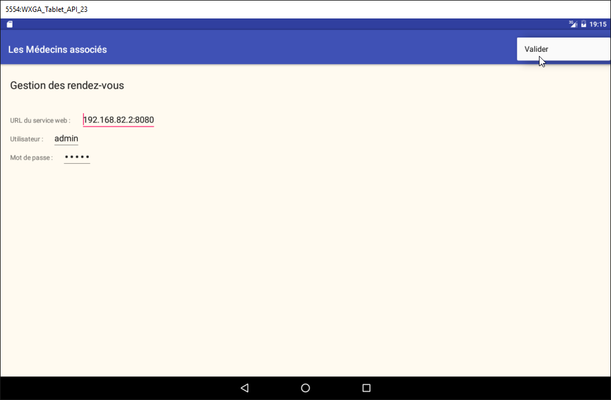
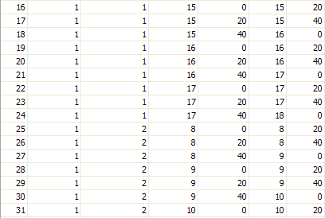
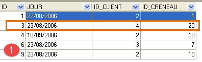
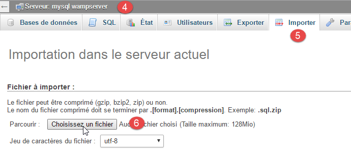
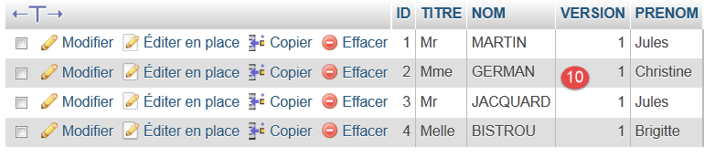
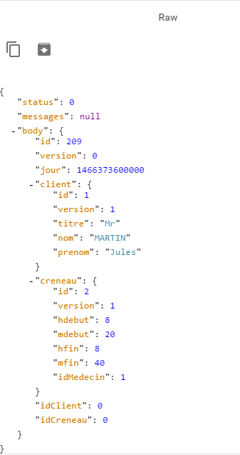
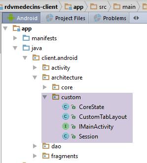
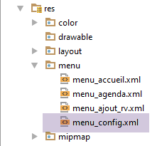
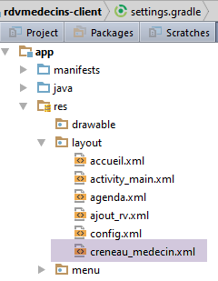

3. 案例研究 - 预约管理
3.1. 项目
在文档 [Tutoriel AngularJS / Spring 4] 中，已开发了一个用于管理医生预约的客户端/服务器应用程序。后续我们将引用该文档 [rdvmedecins-angular]。该应用程序有两种类型的客户端：
- HTML / CSS / JS客户端；
- Android客户端；
Android客户端是通过[Cordova]工具，从HTML版本的客户端自动生成的。本项目的目标是利用前几章所学知识，手动重构该Android客户端。
需要注意的是，这两种方案存在一个重要区别：
- 我们将创建的客户端仅适用于 Android 平板电脑；
- 而在 [rdvmedecins-angular] 版本中，移动网页客户端 （HTML / CSS / JS）可在任何平台（Android、IoS、Windows）上使用；
3.2. Android客户端的视图
共有四个视图。
配置视图

医生选择与预约日期视图

预约时段选择视图

预约客户选择界面

3.3. 项目架构
我们将采用与本文档示例 [Exemple-15]（参见第 1.16 节）类似的客户端/服务器架构：

客户端与服务器之间的异步通信将通过库 RxAndroid 进行管理。
3.4. 数据库
在本文档中，数据库并不起核心作用。此处仅供参考。我们将它命名为 [dbrdvmedecins] 。这是一个 MySQL5 数据库，包含四个表：
 |
3.4.1. 表 [MEDECINS]
该表包含由应用程序管理的医生信息[RdvMedecins]。
 |  |
- ID：医生标识号——该表的主键
- VERSION：表中该行的版本标识号。每次对该行进行修改时，该数字都会增加1。
- NOM：医生姓名
- PRENOM：其名字
- TITRE：其称谓（小姐、女士、先生）
3.4.2. 表 [CLIENTS]
各医生的患者信息存储在表 [CLIENTS] 中：
 |  |
- ID：客户标识号——该表的主键
- VERSION：标识表中该行版本的编号。每次对该行进行修改时，该数字会递增1。
- NOM：客户姓名
- PRENOM：客户名字
- TITRE：其称谓（小姐、女士、先生）
3.4.3. 表 [CRENEAUX]
该表列出了可使用 RV 的时间段：
 |
 |  |  |
- ID：时间段标识号——表的主键（第8行）
- VERSION：表中该行的版本标识号。每次对该行进行修改时，该数字会递增1。
- ID_MEDECIN：标识该时段所属医生的编号——MEDECINS(ID)列的外键。
- HDEBUT：时段开始时间
- MDEBUT：时段开始分钟
- HFIN：时段结束时间
- MFIN：时段结束分钟
例如，表 [CRENEAUX] 的第二行（参见上文 [1]）表明，第 2 号时段于 8 点 20 分开始，8 点 40 分结束，并归属于第 1 号医生 （玛丽女士 PELISSIER）。
3.4.4. 表 [RV]
该表列出了每位医生所分配的 RV：
 |  |
- ID：唯一标识RV的编号——主键
- JOUR：RV的日期
- ID_CRENEAU：RV的时间段——作为外键关联至[CRENEAUX]表中[ID]字段，同时确定时间段和相关医生。
- ID_CLIENT：预订对象的客户编号——作为表[CLIENTS]中字段[ID]的外键
该表的 对关联列（JOUR、ID_CRENEAU）的值施加了唯一性约束：
如果表[RV]中某行在列 （JOUR、ID_CRENEAU）的值分别为（JOUR、ID_CRENEAU），则该值在其他任何地方都不应出现。 否则，这意味着同一时间针对同一位医生生成了两个 RV。从 Java 编程的角度来看，当这种情况发生时，数据库中的 JDBC 驱动程序会触发一个 SQLException。
id 行值为 3（参见上文的 [1]），表示 2006 年 8 月 23 日第 20 个时段的第 4 号客户已预约了 RV。 [CRENEAUX]表显示，第20号时段对应16:20-16:40的时间段，由第1号医生（Marie PELISSIER女士）负责。 表[CLIENTS]显示，第4号客户是布里吉特·BISTROU小姐。
3.4.5. 数据库生成
要创建并填充这些表，可以使用示例存档 |ICI| 中提供的脚本 [dbrdvmedecins.sql]。
 |
使用 [WampServer]（参见第 6.15 节），可按以下步骤操作：
 |  |
- 在 [1] 中，点击 [WampServer] 的图标，并选择 [PhpMyAdmin] [2] 选项，
- 在 [3] 中，在弹出的窗口中，选择链接 [Bases de données]，
 |
- 在 [4-6] 中，导入文件 SQL，
 |  |  |
- 在 [7] 中，选择脚本 SQL，并在 [8] 中执行它，
- 在 [9] 中，数据库表已创建。点击其中一个链接，
 |
- 在 [10] 中，显示表的内容。
此后，我们将不再提及该数据库，但建议读者在测试过程中关注其变化，尤其是在应用程序无法正常运行时。
3.5. Web 服务器 / jSON
这里我们关注的是 [1] 服务器。我们不会在此详细展开说明。该服务器已在文档 [Spring MVC et Thymeleaf par l'exemple] 中详细介绍，感兴趣的读者可参阅该文档。它与示例 15 中的服务器一样，是作为示例开发的。其源代码包含在示例中。 本文将使用其二进制文件：
 |
- [rdvmedecins-server-all-1.0.jar] 是该服务器的二进制文件；
3.5.1. 使用方法
在命令提示符窗口中，进入包含服务器二进制文件的文件夹：
...\rdvmedecins>dir
Le volume dans le lecteur D s’appelle Données
Le numéro de série du volume est 7A34-AE5F
Répertoire de D:\data\istia-1516\projets\dvp-android-studio\rdvmedecins
09/06/2016 10:50 <DIR> .
09/06/2016 10:50 <DIR> ..
06/07/2014 16:36 7 631 dbrdvmedecins.sql
08/06/2016 16:31 <DIR> rdvmedecins-client
08/06/2016 16:22 <DIR> rdvmedecins-server
08/06/2016 16:23 29 618 709 rdvmedecins-server-all-1.0.jar
然后输入以下命令启动服务器（此时 SGBD 和 MySQL 必须已启动）：
...\rdvmedecins>java -jar rdvmedecins-server-all-1.0.jar
. ____ _ __ _ _
/\\ / ___'_ __ _ _(_)_ __ __ _ \ \ \ \
( ( )\___ | '_ | '_| | '_ \/ _` | \ \ \ \
\\/ ___)| |_)| | | | | || (_| | ) ) ) )
' |____| .__|_| |_|_| |_\__, | / / / /
=========|_|==============|___/=/_/_/_/
:: Spring Boot :: (v1.0)
10:55:48.617 [main] INFO rdvmedecins.boot.Boot - Starting Boot v1.0 on st-PC (D:\data\istia-1516\projets\dvp-android-studio\rdvmedecins\rdvmedecins-server-all-1.0.jar started by st in D:\data\istia-1516\projets\dvp-android-studio\rdvmedecins)
10:55:48.621 [main] INFO rdvmedecins.boot.Boot - No active profile set, falling back to default profiles: default
10:55:48.662 [main] INFO o.s.b.c.e.AnnotationConfigEmbeddedWebApplicationContext - Refreshing org.springframework.boot.context.embedded.AnnotationConfigEmbeddedWebApplicationContext@7085bdee: startup date [Thu Jun 09 10:55:48 CEST 2016]; root of context hierarchy
10:55:49.948 [main] INFO o.s.b.c.e.t.TomcatEmbeddedServletContainer - Tomcat initialized with port(s): 8080 (http)
juin 09, 2016 10:55:50 AM org.apache.catalina.core.StandardService startInternal
INFOS: Starting service Tomcat
juin 09, 2016 10:55:50 AM org.apache.catalina.core.StandardEngine startInternal
INFOS: Starting Servlet Engine: Apache Tomcat/8.0.33
juin 09, 2016 10:55:50 AM org.apache.catalina.core.ApplicationContext log
INFOS: Initializing Spring embedded WebApplicationContext
10:55:50.255 [localhost-startStop-1] INFO o.s.web.context.ContextLoader - Root
WebApplicationContext: initialization completed in 1596 ms
...
10:55:55.765 [localhost-startStop-1] INFO o.s.s.web.DefaultSecurityFilterChain
- Creating filter chain: ...]
10:55:55.785 [localhost-startStop-1] INFO o.s.b.c.e.ServletRegistrationBean - Mapping servlet: 'dispatcherServlet' to [/*]
10:55:55.791 [localhost-startStop-1] INFO o.s.b.c.e.FilterRegistrationBean - Mapping filter: 'springSecurityFilterChain' to: [/*]
...
10:55:56.249 [main] INFO o.s.w.s.m.m.a.RequestMappingHandlerMapping - Mapped "{[/getAllCreneaux/{idMedecin}],methods=[GET],produces=[application/json;charset=UTF-8]}" onto public java.lang.String rdvmedecins.controllers.RdvMedecinsController.getAllCreneaux(long,javax.servlet.http.HttpServletResponse,java.lang.String)
throws com.fasterxml.jackson.core.JsonProcessingException
10:55:56.252 [main] INFO o.s.w.s.m.m.a.RequestMappingHandlerMapping - Mapped "{[/getRvMedecinJour/{idMedecin}/{jour}],methods=[GET],produces=[application/json;charset=UTF-8]}" onto public java.lang.String rdvmedecins.controllers.RdvMedecinsController.getRvMedecinJour(long,java.lang.String,javax.servlet.http.HttpServletResponse,java.lang.String) throws com.fasterxml.jackson.core.JsonProcessingException
10:55:56.255 [main] INFO o.s.w.s.m.m.a.RequestMappingHandlerMapping - Mapped "{[/getCreneauById/{id}],methods=[GET],produces=[application/json;charset=UTF-8]}" onto public java.lang.String rdvmedecins.controllers.RdvMedecinsController.getCreneauById(long,javax.servlet.http.HttpServletResponse,java.lang.String) throws
com.fasterxml.jackson.core.JsonProcessingException
10:55:56.257 [main] INFO o.s.w.s.m.m.a.RequestMappingHandlerMapping - Mapped "{[/ajouterRv],methods=[POST],consumes=[application/json;charset=UTF-8],produces=[application/json;charset=UTF-8]}" onto public java.lang.String rdvmedecins.controllers.RdvMedecinsController.ajouterRv(rdvmedecins.models.PostAjouterRv,javax.servlet.http.HttpServletResponse,java.lang.String) throws com.fasterxml.jackson.core.JsonProcessingException
10:55:56.259 [main] INFO o.s.w.s.m.m.a.RequestMappingHandlerMapping - Mapped "{[/getAllClients],methods=[GET],produces=[application/json;charset=UTF-8]}" onto
public java.lang.String rdvmedecins.controllers.RdvMedecinsController.getAllClients(javax.servlet.http.HttpServletResponse,java.lang.String) throws com.fasterxml.jackson.core.JsonProcessingException
10:55:56.261 [main] INFO o.s.w.s.m.m.a.RequestMappingHandlerMapping - Mapped "{[/getClientById/{id}],methods=[GET],produces=[application/json;charset=UTF-8]}"
onto public java.lang.String rdvmedecins.controllers.RdvMedecinsController.getClientById(long,javax.servlet.http.HttpServletResponse,java.lang.String) throws com.fasterxml.jackson.core.JsonProcessingException
10:55:56.264 [main] INFO o.s.w.s.m.m.a.RequestMappingHandlerMapping - Mapped "{[/getMedecinById/{id}],methods=[GET],produces=[application/json;charset=UTF-8]}" onto public java.lang.String rdvmedecins.controllers.RdvMedecinsController.getMedecinById(long,javax.servlet.http.HttpServletResponse,java.lang.String) throws com.fasterxml.jackson.core.JsonProcessingException
10:55:56.266 [main] INFO o.s.w.s.m.m.a.RequestMappingHandlerMapping - Mapped "{[/getRvById/{id}],methods=[GET],produces=[application/json;charset=UTF-8]}" onto public java.lang.String rdvmedecins.controllers.RdvMedecinsController.getRvById(long,javax.servlet.http.HttpServletResponse,java.lang.String) throws com.fasterxml.jackson.core.JsonProcessingException
10:55:56.268 [main] INFO o.s.w.s.m.m.a.RequestMappingHandlerMapping - Mapped "{[/getAllMedecins],methods=[GET],produces=[application/json;charset=UTF-8]}" onto public java.lang.String rdvmedecins.controllers.RdvMedecinsController.getAllMedecins(javax.servlet.http.HttpServletResponse,java.lang.String) throws com.fasterxml.jackson.core.JsonProcessingException
10:55:56.270 [main] INFO o.s.w.s.m.m.a.RequestMappingHandlerMapping - Mapped "{[/supprimerRv],methods=[POST],consumes=[application/json;charset=UTF-8],produces=[application/json;charset=UTF-8]}" onto public java.lang.String rdvmedecins.controllers.RdvMedecinsController.supprimerRv(rdvmedecins.models.PostSupprimerRv,javax.servlet.http.HttpServletResponse,java.lang.String) throws com.fasterxml.jackson.core.JsonProcessingException
10:55:56.273 [main] INFO o.s.w.s.m.m.a.RequestMappingHandlerMapping - Mapped "{[/authenticate],methods=[GET],produces=[application/json;charset=UTF-8]}" onto public java.lang.String rdvmedecins.controllers.RdvMedecinsController.authenticate(javax.servlet.http.HttpServletResponse,java.lang.String) throws com.fasterxml.jackson.core.JsonProcessingException
10:55:56.276 [main] INFO o.s.w.s.m.m.a.RequestMappingHandlerMapping - Mapped "{[/getAgendaMedecinJour/{idMedecin}/{jour}],methods=[GET],produces=[application/json;charset=UTF-8]}" onto public java.lang.String rdvmedecins.controllers.RdvMedecinsController.getAgendaMedecinJour(long,java.lang.String,javax.servlet.http.HttpServletResponse,java.lang.String) throws com.fasterxml.jackson.core.JsonProcessingException
...
10:55:56.681 [main] INFO o.s.b.c.e.t.TomcatEmbeddedServletContainer - Tomcat started on port(s): 8080 (http)
10:55:56.686 [main] INFO rdvmedecins.boot.Boot - Started Boot in 8.231 seconds
服务器会显示大量日志。上文仅摘录了有助于理解的关键部分：
- 第14-18行：机器的8080端口上启动了一个嵌入式Tomcat服务器。正是该服务器执行了预约管理Web应用程序。 该应用程序实际上是一个 Web 服务 / jSON：它通过 URL 进行查询，并通过发送 jSON 字符串进行响应；
- 第24行：该Web服务通过[Spring Security]框架进行安全保护。需通过身份验证才能访问该Web服务的URL；
- 第29-44行：Web服务公开的URL；
下面我们将详细说明这些内容。
3.5.2. Web服务的安全性
Web服务公开的URL接口是安全的。服务器期待在客户端的HTTP请求中看到以下头部信息：
预期代码是字符串“用户名:密码”的 Base64 编码 [http://fr.wikipedia.org/wiki/Base64]。Web 服务在其初始状态下仅接受用户名“admin”和密码“admin”。对于该特定用户，上述标头变为以下内容：
为了能够发送此 HTTP 请求头，我们使用 HTTP [Advanced Rest Client] 客户端，该客户端是 Chrome 浏览器的插件（参见第 6.13 节）。 我们将手动测试Web服务提供的各种URL，以了解：
- URL 所期望的参数；
- 其响应的确切性质；
3.5.3. 医生列表
URL [/getAllMedecins] 用于获取医生列表：
 |
- 在 [1] 中，被查询的 URL；
- 在 [2] 中，用于此次查询的方法 HTTP；
- 在 [3] 中，用户（admin, admin）的安全标头 HTTP；
- 在 [4] 中，发送请求 HTTP；
服务器的响应如下：
 |
- 在 [5] 中，格式化后的服务器响应 jSON；
 |
- 在 [6] 中，同一响应的原始状态；
[5] 格式有助于更清晰地查看响应结构。Web 服务的所有响应都是以下 [Response] 类的实例：
package rdvmedecins.android.dao.service;
import java.util.List;
public class Response<T> {
// ----------------- 属性
// 操作状态
private int status;
// 可能出现的错误信息
private List<String> messages;
// 响应正文
private T body;
// 构造函数
public Response() {
}
public Response(int status, List<String> messages, T body) {
this.status = status;
this.messages = messages;
this.body = body;
}
// 获取器和设置器
...
}
- 第 9 行：响应状态。值为 0 表示未发生错误，否则表示发生错误；
- 第 11 行：若发生错误，则显示错误消息列表；
- 第 13 行：客户端实际期望的响应；
对 URL [/getAllMedecins] 的响应是类型为 [Response<List<Medecin>>] 的对象的字符串 jSON。 [Medecin] 类的定义如下：
package rdvmedecins.android.dao.entities;
public class Medecin extends Personne {
// 默认构造函数
public Medecin() {
}
// 带参数的构造函数
public Medecin(String titre, String nom, String prenom) {
super(titre, nom, prenom);
}
public String toString() {
return String.format("Medecin[%s]", super.toString());
}
}
第 3 行，类 [Medecin] 继承自以下类 [Personne]：
package rdvmedecins.android.dao.entities;
public class Personne extends AbstractEntity {
// 人的属性
private String titre;
private String nom;
private String prenom;
// 默认构造函数
public Personne() {
}
// 带参数的构造函数
public Personne(String titre, String nom, String prenom) {
this.titre = titre;
this.nom = nom;
this.prenom = prenom;
}
// toString
public String toString() {
return String.format("Personne[%s, %s, %s, %s, %s]", id, version, titre, nom, prenom);
}
// 获取器和设置器
...
}
第 3 行，类 [Personne] 继承自以下类 [AbstractEntity]：
package rdvmedecins.android.dao.entities;
import java.io.Serializable;
public class AbstractEntity implements Serializable {
private static final long serialVersionUID = 1L;
protected Long id;
protected Long version;
@Override
public int hashCode() {
int hash = 0;
hash += (id != null ? id.hashCode() : 0);
return hash;
}
// 初始化
public AbstractEntity build(Long id, Long version) {
this.id = id;
this.version = version;
return this;
}
@Override
public boolean equals(Object entity) {
String class1 = this.getClass().getName();
String class2 = entity.getClass().getName();
if (!class2.equals(class1)) {
return false;
}
AbstractEntity other = (AbstractEntity) entity;
return this.id == other.id;
}
// getter 和 setter
...
}
最终，[Medecin] 对象的结构如下：
[Long id; Long version; String titre; String nom; String prenom;]
而 [Response<List<Medecin>>] 的结构如下：
接下来，我们将使用这些简化定义来描述服务器的响应。此外，在一段时间内，我们将不再展示屏幕截图。只需回顾我们刚刚所见的内容即可。当需要执行 POST 请求时，我们会再次使用屏幕截图。 我们还将以如下形式展示一个执行示例：
3.5.4. 客户列表
| |
|
示例：
3.5.5. 某医生诊疗时段列表
|
- [idMedecin]：需要查询其就诊时段的医生的标识符；
- [hdebut]：就诊开始时间；
- [mdebut]：就诊开始的分钟数；
- [hfin]：就诊结束时间；
- [mfin]：就诊结束的分钟数；
对于10:20至10:40之间的时段，将得到 [hdebut, mdebut, hfin, mfin]=[10, 20, 10, 40]。
示例：
3.5.6. 某位医生的预约列表
|
- [idMedecin]：所需查询其预约信息的医生的标识符；
- URL [jour]：预约日期，格式为“yyyy-mm-dd”；
- 响应 [jour]：同上，但采用 Java 日期格式；
- [client]：预约的客户。其结构已在前文描述；
- [idClient]：客户标识符；
- [creneau]：预约时段。其结构已在前文描述；
- [idCreneau]：时段标识符；
示例：
3.5.7. 医生的日程表
|
- [idMedecin]：所需查询其预约信息的医生的标识符；
- URL [jour]：预约日期，格式为“yyyy-mm-dd”；
- [agenda]：医生的日程表；
- [medecin]：相关医生。其结构已在前面定义；
- 响应 [jour]：日程表中的日期，采用 Java 日期格式；
- [creneauxMedecinJour]：一个包含 [CreneauMedecinJour] 类型元素的数组；
- [creneau]：一个时段。其结构已在前文描述；
- [rv]：一个约会。其结构已在前面描述过；
示例：
|
我们分别突出了该时段内有预约和没有预约的情况。
3.5.8. 通过医生ID查找医生
|
- [idMedecin]：医生的ID；
示例 1：
示例 2：
3.5.9. 通过用户 ID 获取客户
|
- [idClient]：客户标识符；
示例 1：
示例 2：
3.5.10. 通过标识符获取时段
|
- [idCreneau]：时段的标识符；
示例 1：
请注意，在回复中并未显示该时段所属的医生，仅显示了其标识符。
示例 2：
3.5.11. 通过用户名预约
|
- [idRv]：预约的标识符；
示例 1：
请注意，在响应中既没有客户信息，也没有预约时段，只有他们的标识符。
示例 2：
3.5.12. 添加预约
URL [/ajouterRv] 用于添加预约。 添加所需的信息（日期、时段和客户）通过 HTTP POST 请求传输。我们将演示如何使用 [Advanced Rest Client] 工具执行此请求。

- 在 [1] 中，查询对象为 URL；
- 在 [2] 中，该请求由 POST 发起；
- 在 [3-4] 中，向服务器明确指出，向其提交的值是以 jSON 字符串的形式发送的；
- 在 [4] 中，包含身份验证的 HTTP 头部；
- 在 [5] 中，包含由 POST 传递的信息。这是一个 jSON 字符串，其中包含：
- [jour]：预约日期，格式为“yyyy-mm-dd”；
- [idClient]：预约对象的客户ID，
- [idCreneau]：预约时段的标识符。由于一个时段属于特定的医生，因此该标识符同时也代表该医生；
- 在 [6] 中，发送该请求；
所发送的字符串 jSON 是以下类型为 [PostAjouterRv] 的对象：
public class PostAjouterRv {
// 帖子数据
private String jour;
private long idClient;
private long idCreneau;
// 构造函数
public PostAjouterRv() {
}
public PostAjouterRv(String jour, long idCreneau, long idClient) {
this.jour = jour;
this.idClient = idClient;
this.idCreneau = idCreneau;
}
// getter 和 setter
...
}
服务器的响应类型为 [Response<Rv>] [int status; List<String> messages; Rv rv]，其中 [rv] 即为新增的预约。
服务器对上述请求的响应如下：
 |
需要注意的是，虽然某些信息未直接显示在 [idClient, idCreneau] 中，但可在 [client] 和 [creneau] 字段中找到。关键信息是新增约会的标识符（209）。 Web服务本可以仅返回这一条信息。
3.5.13. 删除预约
此操作同样通过 POST 实现：
|
已发布的值是以下类型为 [PostSupprimerRv] 的对象的字符串 jSON：
public class PostSupprimerRv {
// 提交数据
private long idRv;
// 构造函数
public PostSupprimerRv() {
}
public PostSupprimerRv(long idRv) {
this.idRv = idRv;
}
// getter 和 setter
...
}
- 第 4 行，[idRv] 是待删除约会的标识符。
示例 1：
编号为 209 的预约已成功取消，因为 [status=0]。
示例 2：
3.6. Android客户端
既然 [1] 服务器已详细介绍并投入运行，接下来我们将研究 Android 客户端 [2]。
3.6.1. Android Studio 项目架构
该项目沿用了 [client-android-skel] 项目的架构（参见第 1.17 节）。在上述 Android 客户端架构中，可区分出三个模块：
- 负责与Web服务通信的[DAO]层；
- [vues] 层，负责与用户进行交互；
- [activité] 模块，用于连接前两个模块。视图层并不知晓 [DAO] 层，它们仅与 Activity 进行通信。
该架构在 Android 客户端的 Android Studio 项目中得到了体现：
 |
- 包 [activity] 实现了该 Activity；
- 包 [architecture] 采用了我们之前开发的架构组件；
- 包 [dao] 实现了 [DAO] 层；
- 包 [fragments] 实现了 [vues]；
3.6.2. 项目定制
 |
文件夹 [architecture / custom] 包含架构中的可自定义元素。
[IMainActivity] 接口如下：
package client.android.architecture.custom;
import client.android.architecture.core.ISession;
import client.android.dao.service.IDao;
public interface IMainActivity extends IDao {
// 会话访问
ISession getSession();
// 视图切换
void navigateToView(int position, ISession.Action action);
// 等待管理
void beginWaiting();
void cancelWaiting();
// 应用程序常量 -------------------------------------
// 调试模式
boolean IS_DEBUG_ENABLED = true;
// 服务器响应的最大等待时间
int TIMEOUT = 1000;
// 执行客户端请求前的等待时间
int DELAY = 000;
// 基本身份验证
boolean IS_BASIC_AUTHENTIFICATION_NEEDED = true;
// 片段邻接性
int OFF_SCREEN_PAGE_LIMIT = 1;
// 标签栏
boolean ARE_TABS_NEEDED = false;
// 加载图片
boolean IS_WAITING_ICON_NEEDED = true;
// 应用程序片段数量
int FRAGMENTS_COUNT = 4;
// 浏览次数
int VUE_CONFIG = 0;
int VUE_ACCUEIL = 1;
int VUE_AGENDA = 2;
int VUE_AJOUT_RV = 3;
}
- 第 25、28 行：[DAO] 层的定制；
- 第 31 行：该应用程序对服务器进行身份验证访问；
- 第 40 行：需要一张加载图片；
- 第 43 行：该应用程序包含四个片段；
- 第46-49行：四个片段的编号；
- 第 37 行：没有选项卡；
片段状态的基类 [CoreState] 将如下所示：
package client.android.architecture.custom;
import client.android.architecture.core.MenuItemState;
import client.android.fragments.state.AccueilFragmentState;
import client.android.fragments.state.AgendaFragmentState;
import client.android.fragments.state.AjoutRvFragmentState;
import client.android.fragments.state.ConfigFragmentState;
import com.fasterxml.jackson.annotation.JsonIgnoreProperties;
import com.fasterxml.jackson.annotation.JsonSubTypes;
import com.fasterxml.jackson.annotation.JsonTypeInfo;
@JsonIgnoreProperties(ignoreUnknown = true)
@JsonTypeInfo(use = JsonTypeInfo.Id.NAME, include = JsonTypeInfo.As.PROPERTY)
@JsonSubTypes({
@JsonSubTypes.Type(value = AccueilFragmentState.class),
@JsonSubTypes.Type(value = AgendaFragmentState.class),
@JsonSubTypes.Type(value = AjoutRvFragmentState.class),
@JsonSubTypes.Type(value = ConfigFragmentState.class)
}
)
public class CoreState {
// 片段是否已被访问
protected boolean hasBeenVisited = false;
// 片段菜单的状态（如有）
protected MenuItemState[] menuOptionsState;
// 获取器和设置器
...
}
- 第15-18行：四个片段的状态如下：
 |
最后，该会话包含片段间共享的数据：
package client.android.architecture.custom;
import client.android.architecture.core.AbstractSession;
import client.android.dao.entities.AgendaMedecinJour;
import client.android.dao.entities.Client;
import client.android.dao.entities.Medecin;
import client.android.fragments.state.AccueilFragmentState;
import client.android.fragments.state.AgendaFragmentState;
import client.android.fragments.state.AjoutRvFragmentState;
import client.android.fragments.state.ConfigFragmentState;
import java.util.List;
public class Session extends AbstractSession {
// 无法序列化为 jSON 的元素必须带有 @JsonIgnore 注解
// 医生列表
private List<Medecin> médecins;
// 客户列表
private List<Client> clients;
// 某医生某天的日程表
private AgendaMedecinJour agenda;
// 日程表中被点击元素的位置
private int position;
// 预约日期（英文格式“yyyy-MM-dd”）
private String dayRv;
// 法语日期格式“dd-MM-yyyy”的预约日期
private String jourRv;
// 获取器和设置器
...
}
- 第17-28行：会话存储了六项信息。我们将在必要时解释这些信息的作用。
3.6.3. [DAO]层
 |
 |  |
- 在 [1] 中，服务器响应中封装的实体。这些实体已在第 3.5 节中介绍；
- 在 [2] 中，是客户端中管理与服务器通信的组件；
我们将不再赘述[1]中的组件。这些内容已在前文介绍过。如有需要，读者可参阅第3.5节。 我们将研究 [service] 包的实现。这也将引出客户端与服务器之间安全通信的实现。
3.6.3.1. 客户端/服务器通信的实现
 |
类 [WebClient] 是 AA 的一个组件，它描述了：
- Web 服务所暴露的 URL 接口；
- 其参数；
- 其响应；
package rdvmedecins.android.dao.service;
import rdvmedecins.android.dao.entities.*;
import org.androidannotations.rest.spring.annotations.*;
import org.androidannotations.rest.spring.api.RestClientRootUrl;
import org.androidannotations.rest.spring.api.RestClientSupport;
import org.springframework.http.converter.json.MappingJackson2HttpMessageConverter;
import org.springframework.web.client.RestTemplate;
import java.util.List;
@Rest(converters = {MappingJackson2HttpMessageConverter.class})
public interface WebClient extends RestClientRootUrl, RestClientSupport {
// RestTemplate
public void setRestTemplate(RestTemplate restTemplate);
// 医生名单
@Get("/getAllMedecins")
public Response<List<Medecin>> getAllMedecins();
// 客户列表
@Get("/getAllClients")
public Response<List<Client>> getAllClients();
// 医生时段列表
@Get("/getAllCreneaux/{idMedecin}")
public Response<List<Creneau>> getAllCreneaux(@Path long idMedecin);
// 医生预约列表
@Get("/getRvMedecinJour/{idMedecin}/{jour}")
public Response<List<Rv>> getRvMedecinJour(@Path long idMedecin, @Path String jour);
// 客户
@Get("/getClientById/{id}")
public Response<Client> getClientById(@Path long id);
// 医生
@Get("/getMedecinById/{id}")
public Response<Medecin> getMedecinById(@Path long id);
// 预约
@Get("/getRvById/{id}")
public Response<Rv> getRvById(@Path long id);
// 时段
@Get("/getCreneauById/{id}")
public Response<Creneau> getCreneauById(@Path long id);
// 添加一个 RV
@Post("/ajouterRv")
public Response<Rv> ajouterRv(@Body PostAjouterRv post);
// 删除预约
@Post("/supprimerRv")
public Response<Rv> supprimerRv(@Body PostSupprimerRv post);
// 获取医生日程表
@Get(value = "/getAgendaMedecinJour/{idMedecin}/{jour}")
public Response<AgendaMedecinJour> getAgendaMedecinJour(@Path long idMedecin, @Path String jour);
}
- 第 19-60 行：包含第 3.5 节中研究过的所有 URL；
- 第16行：[Spring Android]的[RestTemplate]组件，客户端/服务器通信基于该组件；
3.6.3.2. [IDao] 接口
 |
[DAO] 层的 [IDao] 接口如下：
package rdvmedecins.android.dao.service;
import rdvmedecins.android.dao.entities.*;
import rx.Observable;
import java.util.List;
public interface IDao {
// Web 服务的 URL
public void setUrlServiceWebJson(String url);
// 用户
public void setUser(String user, String mdp);
// 客户端超时
public void setTimeout(int timeout);
// 客户列表
public Observable<List<Client>> getAllClients();
// 医生列表
public Observable<List<Medecin>> getAllMedecins();
// 医生时段列表
public Observable<List<Creneau>> getAllCreneaux(long idMedecin);
// 某医生在特定日期的预约列表
public Observable<List<Rv>> getRvMedecinJour(long idMedecin, String jour);
// 按ID查找客户
public Observable<Client> getClientById(long id);
// 按ID查找医生
public Observable<Medecin> getMedecinById(long id);
// 根据ID查找预约
public Observable<Rv> getRvById(long id);
// 根据ID查找时间段
public Observable<Creneau> getCreneauById(long id);
// 添加一个 RV
public Observable<Rv> ajouterRv(String jour, long idCreneau, long idClient);
// 删除一个 RV
public Observable<Rv> supprimerRv(long idRv);
// 业务
public Observable<AgendaMedecinJour> getAgendaMedecinJour(long idMedecin, String jour);
// 调试模式
void setDebugMode(boolean isDebugEnabled);
}
- 第 10 行：用于设置 Web 服务 URL / jSON；
- 第13行：用于设置客户端/服务器通信的用户。[user]是用户ID，[mdp]是其密码；
- 第16行：用于设定服务器响应的最大超时时间；
- 第18-49行：Web服务暴露的每个URL都对应一个方法。它们采用了AA组件中同名方法的签名；
- 第 52 行：用于控制 [DAO] 层的 debug 模式；
3.6.3.3. 类 [Dao]
 |
前一个接口 [IDao] 的实现 [DAO] 如下：
package client.android.dao.service;
import android.util.Log;
import client.android.dao.entities.*;
import org.androidannotations.annotations.AfterInject;
import org.androidannotations.annotations.Bean;
import org.androidannotations.annotations.EBean;
import org.androidannotations.rest.spring.annotations.RestService;
import org.springframework.http.client.ClientHttpRequestInterceptor;
import org.springframework.http.client.SimpleClientHttpRequestFactory;
import org.springframework.http.converter.json.MappingJackson2HttpMessageConverter;
import org.springframework.web.client.RestTemplate;
import rx.Observable;
import java.util.ArrayList;
import java.util.List;
@EBean(scope = EBean.Scope.Singleton)
public class Dao extends AbstractDao implements IDao {
// Web 服务客户端
@RestService
protected WebClient webClient;
// 安全性
@Bean
protected MyAuthInterceptor authInterceptor;
// RestTemplate
private RestTemplate restTemplate;
// RestTemplate 的工厂
private SimpleClientHttpRequestFactory factory;
@AfterInject
public void afterInject() {
...
}
@Override
public void setUrlServiceWebJson(String url) {
...
}
@Override
public void setUser(String user, String mdp) {
...
}
@Override
public void setTimeout(int timeout) {
...
}
@Override
public void setBasicAuthentification(boolean isBasicAuthentificationNeeded) {
if (isDebugEnabled) {
Log.d(className, String.format("setBasicAuthentification thread=%s, isBasicAuthentificationNeeded=%s", Thread.currentThread().getName(), isBasicAuthentificationNeeded));
}
// 身份验证拦截器？
if (isBasicAuthentificationNeeded) {
// 添加身份验证拦截器
List<ClientHttpRequestInterceptor> interceptors = new ArrayList<ClientHttpRequestInterceptor>();
interceptors.add(authInterceptor);
restTemplate.setInterceptors(interceptors);
}
}
// 私有方法 -------------------------------------------------
private void log(String message) {
if (isDebugEnabled) {
Log.d(className, message);
}
}
// 接口的实现 IDao --------------------------------------------------------------------
@Override
public Observable<Response<List<Client>>> getAllClients() {
// 日志
log("getAllClients");
// 结果
return getResponse(new IRequest<Response<List<Client>>>() {
@Override
public Response<List<Client>> getResponse() {
return webClient.getAllClients();
}
});
}
@Override
public Observable<Response<List<Medecin>>> getAllMedecins() {
// 日志
log("getAllMedecins");
// 结果
return getResponse(new IRequest<Response<List<Medecin>>>() {
@Override
public Response<List<Medecin>> getResponse() {
return webClient.getAllMedecins();
}
});
}
@Override
public Observable<Response<List<Creneau>>> getAllCreneaux(final long idMedecin) {
// 日志
log("getAllCreneaux");
// 结果
return getResponse(new IRequest<Response<List<Creneau>>>() {
@Override
public Response<List<Creneau>> getResponse() {
return webClient.getAllCreneaux(idMedecin);
}
});
}
@Override
public Observable<Response<List<Rv>>> getRvMedecinJour(final long idMedecin, final String jour) {
// 日志
log("getRvMedecinJour");
// 结果
return getResponse(new IRequest<Response<List<Rv>>>() {
@Override
public Response<List<Rv>> getResponse() {
return webClient.getRvMedecinJour(idMedecin, jour);
}
});
}
@Override
public Observable<Response<Client>> getClientById(final long id) {
// 日志
log("getClientById");
// 结果
return getResponse(new IRequest<Response<Client>>() {
@Override
public Response<Client> getResponse() {
return webClient.getClientById(id);
}
});
}
@Override
public Observable<Response<Medecin>> getMedecinById(final long id) {
// 日志
log("getMedecinById");
// 结果
return getResponse(new IRequest<Response<Medecin>>() {
@Override
public Response<Medecin> getResponse() {
return webClient.getMedecinById(id);
}
});
}
@Override
public Observable<Response<Rv>> getRvById(final long id) {
// 日志
log("getRvById");
// 结果
return getResponse(new IRequest<Response<Rv>>() {
@Override
public Response<Rv> getResponse() {
return webClient.getRvById(id);
}
});
}
@Override
public Observable<Response<Creneau>> getCreneauById(final long id) {
// 日志
log("getCreneauById");
// 结果
return getResponse(new IRequest<Response<Creneau>>() {
@Override
public Response<Creneau> getResponse() {
return webClient.getCreneauById(id);
}
});
}
@Override
public Observable<Response<Rv>> ajouterRv(final String jour, final long idCreneau, final long idClient) {
// 日志
log("ajouterRv");
// 结果
return getResponse(new IRequest<Response<Rv>>() {
@Override
public Response<Rv> getResponse() {
return webClient.ajouterRv(new PostAjouterRv(jour, idCreneau, idClient));
}
});
}
@Override
public Observable<Response<Rv>> supprimerRv(final long idRv) {
// 日志
log("supprimerRv");
// 结果
return getResponse(new IRequest<Response<Rv>>() {
@Override
public Response<Rv> getResponse() {
return webClient.supprimerRv(new PostSupprimerRv(idRv));
}
});
}
@Override
public Observable<Response<AgendaMedecinJour>> getAgendaMedecinJour(final long idMedecin, final String jour) {
// 日志
log("getAgendaMedecinJour");
// 结果
return getResponse(new IRequest<Response<AgendaMedecinJour>>() {
@Override
public Response<AgendaMedecinJour> getResponse() {
return webClient.getAgendaMedecinJour(idMedecin, jour);
}
});
}
}
- 第 18-72 行：是项目 [client-android-skel] 中类 [Dao] 的基础代码；
- 第 74-216 行：[IDao] 接口的实现。 Web 服务暴露的用于查询 URL 的方法将此查询委托给组件 AA [WebClient]（第 22-23 行）；
- 第 58-63 行：如果客户端/服务器通信通过基本授权进行身份验证，则在 [RestTemplate] 组件中添加一个拦截器。 这将导致由组件 [RestTemplate] 发出的所有 HTTP 请求均被类 [MyAuthInterceptor] 拦截（第 25-26 行）；
类 [MyAuthInterceptor] 如下所示：
package rdvmedecins.android.dao.security;
import org.androidannotations.annotations.Bean;
import org.androidannotations.annotations.EBean;
import org.springframework.http.HttpAuthentication;
import org.springframework.http.HttpBasicAuthentication;
import org.springframework.http.HttpHeaders;
import org.springframework.http.HttpRequest;
import org.springframework.http.client.ClientHttpRequestExecution;
import org.springframework.http.client.ClientHttpRequestInterceptor;
import org.springframework.http.client.ClientHttpResponse;
import java.io.IOException;
@EBean(scope = EBean.Scope.Singleton)
public class MyAuthInterceptor implements ClientHttpRequestInterceptor {
// 用户
private String user;
private String mdp;
public ClientHttpResponse intercept(HttpRequest request, byte[] body, ClientHttpRequestExecution execution) throws IOException {
HttpHeaders headers = request.getHeaders();
HttpAuthentication auth = new HttpBasicAuthentication(user, mdp);
headers.setAuthorization(auth);
return execution.execute(request, body);
}
public void setUser(String user, String mdp) {
this.user = user;
this.mdp = mdp;
}
}
- 第 15 行：类 [MyAuthInterceptor] 是类型为 [singleton] 的组件 AA；
- 第 16 行：类 [MyAuthInterceptor] 继承了 Spring 接口 [ClientHttpRequestInterceptor]。 该接口有一个方法，即第22行的[intercept]方法。我们扩展该接口以拦截客户端发出的所有HTTP请求。[intercept]方法接收三个参数；
- [HtpRequest request]：被拦截的 HTTP 请求，
- [byte[] body]：请求正文（如有，例如POST提交的值），
- [ClientHttpRequestExecution execution]：执行该请求的 Spring 组件；
我们拦截来自 Android 客户端的所有 HTTP 请求，并为其添加第 3.5 节中介绍的 HTTP 身份验证头。
- 第 23 行：我们从拦截的请求中提取 HTTP 头部；
- 第 24 行：我们创建认证头部 HTTP。所使用的认证模式（字符串 'user:mdp' 的 base64 编码）由 Spring 类 [HttpBasicAuthentication] 提供；
- 第 25 行：将我们刚刚创建的身份验证标头添加到被拦截请求的现有标头中；
- 第 26 行：继续执行被拦截的请求。简而言之，被拦截的请求已添加了身份验证头；
[IDao] 接口中各方法的实现均遵循相同模式。以方法 [getAgendaMedecinJour] 为例：
@Override
public Observable<Response<AgendaMedecinJour>> getAgendaMedecinJour(final long idMedecin, final String jour) {
// 日志
log("getAgendaMedecinJour");
// 结果
return getResponse(new IRequest<Response<AgendaMedecinJour>>() {
@Override
public Response<AgendaMedecinJour> getResponse() {
return webClient.getAgendaMedecinJour(idMedecin, jour);
}
});
}
- 第 2 行：该方法需要两个参数：
- [idMedecin]：所需查看日程表的医生ID；
- [jour]：要查询日程表的日期；
- 第6行：调用父类[AbstractDao]中的方法[getResponse]。 该方法期望接收一个类型为 [IRequest<T>] 的参数，其中 T 是第 2 行方法 [getAgendaMedecinJour] 返回的类型，此处为 [Response<AgendaMedecinJour>]。 接口 [IRequest] 仅有一个方法：[getResponse]（第 8 行）；
- 第 8-10 行：方法 [IRequest.getResponse] 的实现。该方法必须返回第 2 行方法 [getAgendaMedecinJour] 所期望的类型为 [Response<AgendaMedecinJour>] 的结果；
- 第9行：由方法[webClient.getAgendaMedecinJour]返回响应：
// 获取医生日程表
@Get(value = "/getAgendaMedecinJour/{idMedecin}/{jour}")
Response<AgendaMedecinJour> getAgendaMedecinJour(@Path long idMedecin, @Path String jour);
第 9 行使用的参数是传递给第 2 行方法 [getAgendaMedecinJour] 的参数。因此，这些参数必须具有 final 属性；
3.6.4. 活动 [MainActivity]
Serveur  |
 |
类 [MainActivity] 如下：
package client.android.activity;
import android.util.Log;
import client.android.architecture.core.AbstractActivity;
import client.android.architecture.core.AbstractFragment;
import client.android.architecture.custom.IMainActivity;
import client.android.dao.entities.*;
import client.android.dao.service.Dao;
import client.android.dao.service.IDao;
import client.android.dao.service.Response;
import client.android.fragments.behavior.AccueilFragment_;
import client.android.fragments.behavior.AgendaFragment_;
import client.android.fragments.behavior.AjoutRvFragment_;
import client.android.fragments.behavior.ConfigFragment_;
import org.androidannotations.annotations.Bean;
import org.androidannotations.annotations.EActivity;
import rx.Observable;
import java.util.List;
@EActivity
public class MainActivity extends AbstractActivity {
// 层[DAO]
@Bean(Dao.class)
protected IDao dao;
// 家长班 ---------------------------------------
@Override
protected void onCreateActivity() {
// 日志
if (IS_DEBUG_ENABLED) {
Log.d(className, "onCreateActivity");
}
}
@Override
protected IDao getDao() {
return dao;
}
@Override
protected AbstractFragment[] getFragments() {
AbstractFragment[] fragments= new AbstractFragment[]{new ConfigFragment_(), new AccueilFragment_(), new AgendaFragment_(), new AjoutRvFragment_()};
return fragments;
}
@Override
protected CharSequence getFragmentTitle(int position) {
return null;
}
@Override
protected void navigateOnTabSelected(int position) {
}
@Override
protected int getFirstView() {
return IMainActivity.VUE_CONFIG;
}
// 界面 IDao -----------------------------------------------------
...
@Override
public Observable<Response<List<Client>>> getAllClients() {
return dao.getAllClients();
}
@Override
public Observable<Response<List<Medecin>>> getAllMedecins() {
return dao.getAllMedecins();
}
@Override
public Observable<Response<List<Creneau>>> getAllCreneaux(long idMedecin) {
return dao.getAllCreneaux(idMedecin);
}
@Override
public Observable<Response<List<Rv>>> getRvMedecinJour(long idMedecin, String jour) {
return dao.getRvMedecinJour(idMedecin, jour);
}
@Override
public Observable<Response<Client>> getClientById(long id) {
return dao.getClientById(id);
}
@Override
public Observable<Response<Medecin>> getMedecinById(long id) {
return dao.getMedecinById(id);
}
@Override
public Observable<Response<Rv>> getRvById(long id) {
return dao.getRvById(id);
}
@Override
public Observable<Response<Creneau>> getCreneauById(long id) {
return dao.getCreneauById(id);
}
@Override
public Observable<Response<Rv>> ajouterRv(String jour, long idCreneau, long idClient) {
return dao.ajouterRv(jour, idCreneau, idClient);
}
@Override
public Observable<Response<Rv>> supprimerRv(long idRv) {
return dao.supprimerRv(idRv);
}
@Override
public Observable<Response<AgendaMedecinJour>> getAgendaMedecinJour(long idMedecin, String jour) {
return dao.getAgendaMedecinJour(idMedecin, jour);
}
}
- 第21-66行：这些代码行是模板[client-android-skel]中的默认内容；
- 第 66-119 行：实现 [IDao] 接口。所有方法都将工作委托给第 26 行的 [DAO] 层；
- 第42-46行：方法[getFragments]返回应用程序的四个片段数组；
- 第 58-61 行：配置视图是应用程序启动时显示的第一个视图；
3.6.5. 会话
 |
类 [Session] 用于存储需要在片段之间传递的信息。其定义如下：
package rdvmedecins.android.architecture;
import rdvmedecins.android.dao.entities.AgendaMedecinJour;
import rdvmedecins.android.dao.entities.Client;
import rdvmedecins.android.dao.entities.Medecin;
import org.androidannotations.annotations.EBean;
import java.util.List;
@EBean(scope = EBean.Scope.Singleton)
public class Session {
// 医生列表
private List<Medecin> médecins;
// 客户列表
private List<Client> clients;
// 日程表
private AgendaMedecinJour agenda;
// 日历中被点击项的位置
private int position;
// 预约日期（英文格式“yyyy-MM-dd”）
private String dayRv;
// 法语日期格式“dd-MM-yyyy”的预约日期
private String jourRv;
// 获取器和设置器
...
}
- 第 10 行：类 [Session] 是 AA 组件的实例，仅实例化一个；
- 第12-15行：在本案例研究中，假设医生列表和客户列表保持不变。这些数据将在应用程序启动时获取，并存储在会话中以便片段使用；
- 第20-23行：预约的日期。该日期以两种形式处理：在Android客户端中采用法语格式（第23行），与服务器通信时采用英语格式（第21行）；
- 第19行：日历上被点击元素（添加/删除链接）的位置；
3.6.6. 配置视图管理
3.6.6.1. 视图
配置视图是应用程序启动时显示的视图：

视觉界面的元素如下：
3.6.6.2. 该片段
配置视图由以下片段 [ConfigFragment] 管理：
 |
package client.android.fragments.behavior;
import android.util.Log;
import android.view.View;
import android.widget.Button;
import android.widget.EditText;
import android.widget.TextView;
import client.android.R;
import client.android.architecture.core.AbstractFragment;
import client.android.architecture.core.ISession;
import client.android.architecture.core.MenuItemState;
import client.android.architecture.custom.CoreState;
import client.android.architecture.custom.IMainActivity;
import client.android.dao.entities.Client;
import client.android.dao.entities.Medecin;
import client.android.dao.service.Response;
import client.android.fragments.state.ConfigFragmentState;
import org.androidannotations.annotations.*;
import rx.functions.Action1;
import java.net.URI;
import java.util.List;
@EFragment(R.layout.config)
@OptionsMenu(R.menu.menu_config)
public class ConfigFragment extends AbstractFragment {
// 视觉界面的元素
@ViewById(R.id.edt_urlServiceRest)
protected EditText edtUrlServiceRest;
@ViewById(R.id.txt_errorUrlServiceRest)
protected TextView txtErrorUrlServiceRest;
@ViewById(R.id.txt_errorUtilisateur)
protected TextView txtErrorUtilisateur;
@ViewById(R.id.edt_utilisateur)
protected EditText edtUtilisateur;
@ViewById(R.id.edt_mdp)
protected EditText edtMdp;
// 输入字段
private String urlServiceRest;
private String utilisateur;
private String mdp;
// 页面验证
@OptionsItem(R.id.actionValider)
protected void doValider() {
...
}
..
// 父类方法的实现 -------------------------------------------
...
}
- 第 25 行：该片段关联到以下菜单 [menu_config]：
 |
<menu xmlns:android="http://schemas.android.com/apk/res/android"
xmlns:app="http://schemas.android.com/apk/res-auto"
xmlns:tools="http://schemas.android.com/tools"
tools:context=".activity.MainActivity1">
<item
android:id="@+id/menuActions"
app:showAsAction="ifRoom"
android:title="@string/menuActions">
<menu>
<item
android:id="@+id/actionValider"
android:title="@string/actionValider"/>
<item
android:id="@+id/actionAnnuler"
android:title="@string/actionAnnuler"/>
</menu>
</item>
</menu>
- 第 28-38 行：可视化界面的元素；
- 第 41-43 行：表单中的三个输入框；
点击菜单选项 [Valider] 由方法 [doValider] 处理：
// 页面验证
@OptionsItem(R.id.actionValider)
protected void doValider() {
// 隐藏之前的错误信息
txtErrorUrlServiceRest.setVisibility(View.INVISIBLE);
txtErrorUtilisateur.setVisibility(View.INVISIBLE);
// 验证输入数据的有效性
if (!isPageValid()) {
return;
}
// 填写Web服务的URL
mainActivity.setUrlServiceWebJson(urlServiceRest);
// 向用户反馈
mainActivity.setUser(utilisateur, mdp);
// 开始等待——将启动 2 个异步任务
beginWaiting(2);
// 医生
executeInBackground(mainActivity.getAllMedecins(), new Action1<Response<List<Medecin>>>() {
@Override
public void call(Response<List<Medecin>> responseMedecins) {
// 处理响应
consumeMedecins(responseMedecins);
}
});
// 客户
executeInBackground(mainActivity.getAllClients(), new Action1<Response<List<Client>>>() {
@Override
public void call(Response<List<Client>> responseClients) {
// 处理响应
consumeClients(responseClients);
}
});
}
private void consumeMedecins(Response<List<Medecin>> responseMedecins) {
// 日志
if (isDebugEnabled) {
Log.d(className, "consume médecins");
}
// 错误？
if (responseMedecins.getStatus() != 0) {
// 消息
showAlert(responseMedecins.getMessages());
// 取消
doAnnuler();
// 返回 UI
return;
}
// 在会话中保存医生信息
session.setMédecins(responseMedecins.getBody());
}
private void consumeClients(Response<List<Client>> responseClients) {
// 日志
if (isDebugEnabled) {
Log.d(className, "consume clients");
}
// 错误？
if (responseClients.getStatus() != 0) {
// 消息
showAlert(responseClients.getMessages());
// 取消
doAnnuler();
// 返回UI
return;
}
// 将客户信息存储在会话中
session.setClients(responseClients.getBody());
}
- 第 8-10 行：测试表单中三个输入项的有效性。如果表单无效，则不再继续处理；
- 第 11-14 行：将 [DAO] 层所需的输入传递给该活动；
- 第16行：通知父类将启动两个异步任务，并准备进入等待状态；
- 第17-24行：请求医生列表；
- 第 18 行：方法 [executeInBackground] 需要两个参数：
- 第 18 行：待执行和观察的进程由方法 [mainActivity.getAllMedecins()] 提供；
- 第18-24行：第二个参数是类型为[Action1<T>]的实例，其中T是被监视进程返回的类型，此处为[Response<List<Medecin>>]
- 第 22 行：收到响应后，将其传递给第 36 行的 [consumeMedecins] 方法；
- 第25-33行：在启动第一个异步任务后，再启动第二个任务以请求客户列表。因此将有两个任务并行执行；
- 第36-52行：收到医生任务的响应，并对其进行处理；
- 第42-49行：首先检查服务器是否在响应的[status]字段中报告了错误；
- 第44行：若存在错误，则显示服务器在响应的[messages]字段中放置的消息；
- 第46行：取消所有任务；
- 第48行：返回用户界面；
- 第 51 行：若未发生错误，将医生列表存入会话；
通过以下方法验证输入的有效性（第8行）：
private boolean isPageValid() {
// 验证输入数据的有效性
boolean erreur;
URI service;
// URL 服务的有效性 REST
urlServiceRest = String.format("http://%s", edtUrlServiceRest.getText().toString().trim());
try {
service = new URI(urlServiceRest);
erreur = service.getHost() == null || service.getPort() == -1;
} catch (Exception ex) {
// 记录错误
erreur = true;
}
if (erreur) {
// 显示错误
txtErrorUrlServiceRest.setVisibility(View.VISIBLE);
}
// 用户
utilisateur = edtUtilisateur.getText().toString().trim();
if (utilisateur.length() == 0) {
// 显示错误
txtErrorUtilisateur.setVisibility(View.VISIBLE);
// 记录错误
erreur = true;
}
// 密码
mdp = edtMdp.getText().toString().trim();
// 返回
return !erreur;
}
方法 [beginWaiting]（第16行）如下：
// 开始等待
protected void beginWaiting(int numberOfRunningTasks) {
// 正在准备任务启动
beginRunningTasks(numberOfRunningTasks);
// 按钮和菜单状态
setAllMenuOptionsStates(false);
setMenuOptionsStates(new MenuItemState[]{new MenuItemState(R.id.menuActions, true),new MenuItemState(R.id.actionAnnuler, true)});
}
- 第4行：通知父任务将启动[numberOfRunningTasks]任务；
- 第 6 行：将菜单中的所有选项设为不可见；
- 第 7 行：随后将 [Actions/Annuler] 选项设为可见；
点击菜单选项 [Annuler] 由方法 [doAnnuler] 处理：
@OptionsItem(R.id.actionAnnuler)
protected void doAnnuler() {
if (isDebugEnabled) {
Log.d(className, "Annulation demandée");
}
// 取消异步任务
cancelRunningTasks();
}
- 第 8 行：要求父类取消异步任务；
3.6.6.3. 片段生命周期管理
片段具有以下状态 [ConfigFragmentState]：
package client.android.fragments.state;
import client.android.architecture.custom.CoreState;
public class ConfigFragmentState extends CoreState {
// 两个错误消息的可见性
private boolean txtErrorUrlServiceRestVisible;
private boolean txtErrorUtilisateurVisible;
// getter 和 setter
...
}
- 当父类要求时，片段将保存其两个错误消息的可见性；
片段的生命周期实现如下：
// 父类方法的实现 -------------------------------------------
@Override
public CoreState saveFragment() {
// 保存片段状态
ConfigFragmentState state = new ConfigFragmentState();
state.setTxtErrorUrlServiceRestVisible(txtErrorUrlServiceRest.getVisibility() == View.VISIBLE);
state.setTxtErrorUtilisateurVisible(txtErrorUtilisateur.getVisibility() == View.VISIBLE);
return state;
}
@Override
protected int getNumView() {
return IMainActivity.VUE_CONFIG;
}
@Override
protected void initFragment(CoreState previousState) {
}
@Override
protected void initView(CoreState previousState) {
if (previousState == null) {
// 首次访问
// 缓存错误消息
txtErrorUtilisateur.setVisibility(View.INVISIBLE);
txtErrorUrlServiceRest.setVisibility(View.INVISIBLE);
// 菜单
initMenu();
}
}
@Override
protected void updateOnSubmit(CoreState previousState) {
}
@Override
protected void updateOnRestore(CoreState previousState) {
// 恢复错误消息的可见性
ConfigFragmentState state = (ConfigFragmentState) previousState;
// 非首次访问 - 恢复显示错误信息
txtErrorUtilisateur.setVisibility(state.isTxtErrorUtilisateurVisible() ? View.VISIBLE : View.INVISIBLE);
txtErrorUrlServiceRest.setVisibility(state.isTxtErrorUrlServiceRestVisible() ? View.VISIBLE : View.INVISIBLE);
}
@Override
protected void notifyEndOfUpdates() {
}
@Override
protected void notifyEndOfTasks(boolean runningTasksHaveBeenCanceled) {
// 菜单
initMenu();
// 下一视图？
if (!runningTasksHaveBeenCanceled) {
mainActivity.navigateToView(IMainActivity.VUE_ACCUEIL, ISession.Action.SUBMIT);
}
}
// 私有方法 ------------------------------------------------
private void initMenu(){
// 菜单状态
setAllMenuOptionsStates(true);
setMenuOptionsStates(new MenuItemState[]{new MenuItemState(R.id.actionAnnuler, false)});
}
- 第2-9行：当父类请求时，片段会保存其两个错误消息的状态；
- 第11-14行：片段编号为[IMainActivity.VUE_CONFIG]；
- 第 16-19 行：在片段首次生成时（previousState==null）或后续重新生成时（previousState !=null）执行。此处无需执行任何操作；
- 第21-31行：在与片段关联的视图首次构建时（previousState==null）或后续重建时（previousState !=null）执行；
- 第24-29行：首次访问时，隐藏错误消息并显示不含操作[Annuler]的菜单（第62-66行）；
- 第33-35行：当通过操作[SUBMIT]到达该片段时执行。此处从未发生过这种情况；
- 第37-44行：当通过操作[NAVIGATION]或[RESTORE]进入该片段时执行。根据前一状态恢复错误消息的状态；
- 第47-49行：当所有先前更新完成后执行。无需再执行其他操作；
- 第 51-59 行：当所有异步任务完成时执行；
- 第53-54行：将菜单恢复为默认状态；
- 第56-58行：如果任务正常完成，则转到下一个视图；否则保持当前视图；
3.6.7. 主页视图管理
3.6.7.1. 视图
欢迎视图如下：
视觉界面的元素如下：
3.6.7.2. 片段
欢迎页面由以下片段 [AccueilFragment] 管理：
 |
package client.android.fragments.behavior;
import android.util.Log;
import android.view.View;
import android.widget.ArrayAdapter;
import android.widget.Button;
import android.widget.DatePicker;
import android.widget.Spinner;
import client.android.R;
import client.android.architecture.core.AbstractFragment;
import client.android.architecture.core.ISession;
import client.android.architecture.core.MenuItemState;
import client.android.architecture.custom.CoreState;
import client.android.architecture.custom.IMainActivity;
import client.android.dao.entities.AgendaMedecinJour;
import client.android.dao.entities.Medecin;
import client.android.dao.service.Response;
import client.android.fragments.state.AccueilFragmentState;
import org.androidannotations.annotations.*;
import rx.functions.Action1;
import java.util.Calendar;
import java.util.List;
import java.util.Locale;
@EFragment(R.layout.accueil)
@OptionsMenu(R.menu.menu_accueil)
public class AccueilFragment extends AbstractFragment {
// 视觉界面的元素
@ViewById(R.id.spinnerMedecins)
protected Spinner spinnerMedecins;
@ViewById(R.id.edt_JourRv)
protected DatePicker edtJourRv;
// 本地数据
private List<Medecin> medecins;
private Calendar calendrier;
private String[] spinnerMedecinsDataSource;
// 页面验证
@OptionsItem(R.id.actionValider)
protected void doValider() {
...
}
...
// 父类方法的实现 -------------------------------------
...
}
- 第 26 行：该片段关联到以下菜单 [menu_accueil]：
 |
<menu xmlns:android="http://schemas.android.com/apk/res/android"
xmlns:app="http://schemas.android.com/apk/res-auto"
xmlns:tools="http://schemas.android.com/tools"
tools:context=".activity.MainActivity1">
<item
android:id="@+id/menuActions"
app:showAsAction="ifRoom"
android:title="@string/menuActions">
<menu>
<item
android:id="@+id/actionValider"
android:title="@string/actionValider"/>
<item
android:id="@+id/actionAnnuler"
android:title="@string/actionAnnuler"/>
</menu>
</item>
<item
android:id="@+id/menuNavigation"
app:showAsAction="ifRoom"
android:title="@string/menuNavigation">
<menu>
<item
android:id="@+id/navigationToConfig"
android:title="@string/navigationToConfig"/>
</menu>
</item>
</menu>
- 第 31-34 行：视觉界面的元素；
- 第 37 行：医生列表；
- 第 38 行：日历；
- 第 39 行：医生下拉列表的数据源；
点击链接 [Valider] 由以下方法 [doValider] 处理：
// 页面验证
@OptionsItem(R.id.actionValider)
protected void doValider() {
// 记录所选医生的ID
Long idMedecin = medecins.get(spinnerMedecins.getSelectedItemPosition()).getId();
// 将日期存储在会话中
String jourRv = String.format(new Locale("Fr-fr"), "%02d-%02d-%04d", edtJourRv.getDayOfMonth(), edtJourRv.getMonth() + 1, edtJourRv.getYear());
session.setJourRv(jourRv);
// 转换为 yyyy-MM-dd 日期格式
String dayRv = String.format(new Locale("Fr-fr"), "%04d-%02d-%02d", edtJourRv.getYear(), edtJourRv.getMonth() + 1, edtJourRv.getDayOfMonth());
session.setDayRv(dayRv);
// 开始等待 - 将启动 1 个异步任务
beginWaiting(1);
// 查询医生的日程表
executeInBackground(mainActivity.getAgendaMedecinJour(idMedecin, dayRv), new Action1<Response<AgendaMedecinJour>>() {
@Override
public void call(Response<AgendaMedecinJour> responseAgendaMedecinJour) {
// 处理响应
consumeAgenda(responseAgendaMedecinJour);
}
});
}
private void consumeAgenda(Response<AgendaMedecinJour> responseAgendaMedecinJour) {
// 错误？
if (responseAgendaMedecinJour.getStatus() != 0) {
// 消息
showAlert(responseAgendaMedecinJour.getMessages());
// 取消
doAnnuler();
// 返回 UI
return;
}
// 将日程表放入会话
session.setAgenda(responseAgendaMedecinJour.getBody());
}
- 第5行：获取所选医生的ID；
- 第7-8行：将选定的日期以法语格式存入会话；
- 第10-11行：将选定的日期转换为英语格式；
- 第13行：通知父类将启动异步任务，并准备进入等待状态；
- 第15-22行：查询医生的日程表；
- 第15行：方法[executeInBackground]需要两个参数：
- 第 15 行：待执行和观察的进程由方法 [mainActivity.getAgendaMedecinJour(idMedecin, dayRv)] 提供；
- 第15-22行：第二个参数是类型为[Action1<T>]的实例，其中T是被监视进程返回的类型，此处为[Response<AgendaMedecinJour>]
- 第 20 行：收到响应后，将其传递给第 25 行的 [consumeAgenda] 方法；
- 第15行：方法[executeInBackground]需要两个参数：
- 第25-37行：已收到医生的日程表。对其进行处理；
- 第27-34行：首先检查服务器是否在响应的[status]字段中报告了错误；
- 第29行：若存在错误，则显示服务器在响应的[messages]字段中放置的消息；
- 第31行：取消所有任务；
- 第33行：返回用户界面；
- 第 36 行：若无错误，则将日程表加载到会话中；
方法 [beginWaiting]（第 13 行）如下：
// 开始等待
protected void beginWaiting(int numberOfRunningTasks) {
// 准备启动任务
beginRunningTasks(numberOfRunningTasks);
// 按钮和菜单的状态
setAllMenuOptionsStates(false);
setMenuOptionsStates(new MenuItemState[]{new MenuItemState(R.id.menuActions, true),new MenuItemState(R.id.actionAnnuler, true)});
}
- 第 4 行：通知父任务将启动 [numberOfRunningTasks] 任务；
- 第6行：将菜单中的所有选项设为不可见；
- 第 7 行：随后将 [Actions/Annuler] 选项设为可见；
点击菜单选项 [Annuler] 由方法 [doAnnuler] 处理：
@OptionsItem(R.id.actionAnnuler)
protected void doAnnuler() {
if (isDebugEnabled) {
Log.d(className, "Annulation demandée");
}
// 取消异步任务
cancelRunningTasks();
}
- 第 8 行：请求父类取消异步任务；
点击菜单选项 [Retour à la configuration] 的处理方式如下：
@OptionsItem(R.id.navigationToConfig)
protected void navigationToConfig() {
// 导航至配置视图
mainActivity.navigateToView(IMainActivity.VUE_CONFIG, ISession.Action.NAVIGATION);
}
- 第 4 行：通过操作 [NAVIGATION] 导航至配置视图。这意味着希望将配置视图恢复到上次离开时的状态；
3.6.7.3. 片段生命周期管理
该片段具有以下状态：[AccueilFragmentState]：
package client.android.fragments.state;
import android.widget.ArrayAdapter;
import client.android.architecture.custom.CoreState;
import client.android.dao.entities.CreneauMedecinJour;
public class AccueilFragmentState extends CoreState {
// 片段状态 [Accueil]
// 所选医生的职位
private int selectedMedecinPosition;
// 所选日期
private int year;
private int month;
private int dayOfMonth;
// 医生下拉菜单的数据源
private String[] spinnerMedecinsDataSource;
// 构造函数
public AccueilFragmentState() {
}
// 获取器和设置器
...
}
- 第 11 行：用于在医生列表中显示所选元素；
- 第13-15行：用于还原日历中选定的日期；
- 第 17 行：用于返回医生列表的数据源；
该片段的生命周期实现如下：
// 父类方法的实现 -------------------------------------
@Override
public CoreState saveFragment() {
// 保存视图
AccueilFragmentState state = new AccueilFragmentState();
state.setSelectedMedecinPosition(spinnerMedecins.getSelectedItemPosition());
state.setDayOfMonth(edtJourRv.getDayOfMonth());
state.setMonth(edtJourRv.getMonth());
state.setYear(edtJourRv.getYear());
state.setSpinnerMedecinsDataSource(spinnerMedecinsDataSource);
return state;
}
@Override
protected int getNumView() {
return IMainActivity.VUE_ACCUEIL;
}
@Override
protected void initFragment(CoreState previousState) {
// 从会话中获取医生
medecins = session.getMédecins();
// 首次就诊？
if (previousState == null) {
// 构建下拉列表显示的数组
spinnerMedecinsDataSource = new String[medecins.size()];
int i = 0;
for (Medecin medecin : medecins) {
spinnerMedecinsDataSource[i] = String.format("%s %s %s", medecin.getTitre(), medecin.getPrenom(), medecin.getNom());
i++;
}
} else {
// 非首次就诊
AccueilFragmentState state = (AccueilFragmentState) previousState;
spinnerMedecinsDataSource = state.getSpinnerMedecinsDataSource();
}
// 日历
calendrier = Calendar.getInstance();
}
@Override
protected void initView(CoreState previousState) {
// 将医生下拉菜单与其数据源关联
ArrayAdapter<String> dataAdapterMedecins = new ArrayAdapter<>(activity, android.R.layout.simple_spinner_item, spinnerMedecinsDataSource);
dataAdapterMedecins.setDropDownViewResource(android.R.layout.simple_spinner_dropdown_item);
spinnerMedecins.setAdapter(dataAdapterMedecins);
// 日历的起始日期设为今天
edtJourRv.setMinDate(calendrier.getTimeInMillis());
// 首次就诊？
if (previousState == null) {
// 菜单
initMenu();
}
}
@Override
protected void updateOnSubmit(CoreState previousState) {
// 菜单
initMenu();
}
@Override
protected void updateOnRestore(CoreState previousState) {
// 恢复当前会话状态
AccueilFragmentState state = (AccueilFragmentState) previousState;
// 在医生下拉菜单中选择
spinnerMedecins.setSelection(state.getSelectedMedecinPosition());
// 日历
edtJourRv.updateDate(state.getYear(), state.getMonth(), state.getDayOfMonth());
}
@Override
protected void notifyEndOfUpdates() {
}
@Override
protected void notifyEndOfTasks(boolean runningTasksHaveBeenCanceled) {
// 在所有任务完成或取消后调用
// 菜单状态
initMenu();
// 下一视图？
if (!runningTasksHaveBeenCanceled) {
mainActivity.navigateToView(IMainActivity.VUE_AGENDA, ISession.Action.SUBMIT);
}
}
// 私有方法 ------------------------------------------------
private void initMenu() {
// 菜单状态
setAllMenuOptionsStates(true);
setMenuOptionsStates(new MenuItemState[]{new MenuItemState(R.id.actionAnnuler, false)});
}
- 第2-9行：当父类请求时，该片段会保存以下元素的状态：
- 第 6 行：在医生列表中选中的位置；
- 第7-9行：日历中选定日期的日期（日、月、年）；
- 第 10 行：医生下拉列表的数据源；
- 第14-17行：片段编号为[IMainActivity.VUE_ACCUEIL]；
- 第19-39行：在片段首次生成时（previousState==null）或后续重新生成时（previousState !=null）执行；
- 第25-31行：如果是首次访问，则构建医生选择器（spinner）的数据源；
- 第33-35行：对于后续访问，从片段的上一状态中获取下拉列表的数据源；
- 第 41-54 行：当片段关联的视图首次构建（previousState==null）或后续重建（previousState !=null）时执行；
- 第50-53行：对于首次访问，显示不包含操作[Annuler]的菜单（第88-92行）；
- 第43-48行：无论是否为首次访问，均将医生下拉列表与其数据源关联（第44-46行），并将日历的起始日期设为当前日期（第48行）；
- 第56-60行：当通过操作[SUBMIT]进入该片段时执行。此时用户来自视图[CONFIG]。将菜单恢复为初始状态；
- 第62-70行：当通过操作[NAVIGATION]或[RESTORE]进入该片段时执行；
- 第67行：将医生下拉列表重置为上次选中的医生；
- 第 69 行：将日历定位到上次选择的日期；
- 第 72-74 行：当所有上述更新完成后执行。无需再执行其他操作；
- 第 76-85 行：当所有异步任务完成后执行；
- 第80行：将菜单恢复为默认状态；
- 第82-84行：若任务正常完成，则切换至下一视图；否则保持当前视图；
3.6.8. 日程视图管理
3.6.8.1. 视图
主视图如下：

视觉界面的元素如下：
3.6.8.2. 片段
日程视图由以下片段 [AgendaFragment] 管理：
 |
package client.android.fragments.behavior;
import android.util.Log;
import android.view.View;
import android.widget.ArrayAdapter;
import android.widget.ListView;
import android.widget.TextView;
import android.widget.Toast;
import client.android.R;
import client.android.architecture.core.AbstractFragment;
import client.android.architecture.core.ISession;
import client.android.architecture.core.MenuItemState;
import client.android.architecture.custom.CoreState;
import client.android.architecture.custom.IMainActivity;
import client.android.dao.entities.AgendaMedecinJour;
import client.android.dao.entities.CreneauMedecinJour;
import client.android.dao.entities.Medecin;
import client.android.dao.entities.Rv;
import client.android.dao.service.Response;
import client.android.fragments.state.AgendaFragmentState;
import org.androidannotations.annotations.EFragment;
import org.androidannotations.annotations.OptionsItem;
import org.androidannotations.annotations.OptionsMenu;
import org.androidannotations.annotations.ViewById;
import rx.functions.Action1;
@EFragment(R.layout.agenda)
@OptionsMenu(R.menu.menu_agenda)
public class AgendaFragment extends AbstractFragment {
// 视觉界面的元素
@ViewById(R.id.txt_titre2_agenda)
protected TextView txtTitre2;
@ViewById(R.id.listViewAgenda)
protected ListView lstCreneaux;
// 片段显示的日程表
private AgendaMedecinJour agenda;
// 时段信息
private int firstPosition;
private int top;
// 预约是否已删除
private boolean rdvSupprimé;
// 已添加或已删除时段的编号
private int numCréneau;
// 添加/删除后的日程表更新
private void updateAgenda() {
...
}
...
// 父类方法的实现 ------------------------------------------------------
...
}
- 第 27 行：该片段关联到以下菜单 [menu_agenda]：
 |
<menu xmlns:android="http://schemas.android.com/apk/res/android"
xmlns:app="http://schemas.android.com/apk/res-auto"
xmlns:tools="http://schemas.android.com/tools"
tools:context=".activity.MainActivity1">
<item
android:id="@+id/menuActions"
app:showAsAction="ifRoom"
android:title="@string/menuActions">
<menu>
<item
android:id="@+id/actionAnnuler"
android:title="@string/actionAnnuler"/>
<item
android:id="@+id/actionAgenda"
android:title="@string/actionAgenda"/>
</menu>
</item>
<item
android:id="@+id/menuNavigation"
app:showAsAction="ifRoom"
android:title="@string/menuNavigation">
<menu>
<item
android:id="@+id/navigationToConfig"
android:title="@string/navigationToConfig"/>
<item
android:id="@+id/navigationToAccueil"
android:title="@string/navigationToAccueil"/>
</menu>
</item>
</menu>
- 第 32-35 行：视觉界面的元素；
- 第 37-45 行：方法的全局数据；
3.6.8.2.1. 方法 [updateAgenda]
在代码的多个位置都需要（重新）生成日程表的时段列表。该功能已被提取到以下私有方法 [updateAgenda] 中：
// 添加/删除后更新日程表
private void updateAgenda() {
// 日程表时段的（重新）生成
// 日程表被纳入会话并存储在片段的字段中
agenda = session.getAgenda();
// 重新生成 ListView 中的时段
ArrayAdapter<CreneauMedecinJour> adapter = new ListCreneauxAdapter(activity, R.layout.creneau_medecin,
agenda.getCreneauxMedecinJour(), this);
lstCreneaux.setAdapter(adapter);
// 定位到 ListView 的正确位置
lstCreneaux.setSelectionFromTop(firstPosition, top);
}
- 第 5 行：从会话中获取日程表，并将其存储在片段的 [agenda] 字段中；
- 第 7-9 行：定义组件适配器 [ListView]。该适配器同时定义了 [ListView] 的数据源及其每个元素的显示模板。我们将在后续内容中介绍该适配器；
- 第11行：返回日程表的先前位置。实际上，当前仅显示了当天部分时段。若在最后一个时段中添加/删除一个约会，上述代码将刷新页面以显示新的日程表。 这种刷新会导致视图重新定位到第一个时段，这并非我们所期望的。第5行解决了这个问题。该解决方案的详细说明请参见URL和[http://stackoverflow.com/questions/3014089/maintain-save-restore-scroll-position-when-returning-to-a-listview]；
类 [ListCreneauxAdapter] 用于定义 [ListView] 中的一个行：

如上所示，根据该时段是否有预约，显示效果会有所不同。类 [ListCreneauxAdapter] 的代码如下：
...
public class ListCreneauxAdapter extends ArrayAdapter<CreneauMedecinJour> {
// 时间段表
private CreneauMedecinJour[] creneauxMedecinJour;
// 执行上下文
private Context context;
// 时间段列表中某行显示布局的ID
private int layoutResourceId;
// 点击监听器
private AgendaFragment vue;
// 构造函数
public ListCreneauxAdapter(Context context, int layoutResourceId, CreneauMedecinJour[] creneauxMedecinJour,
AgendaFragment vue) {
super(context, layoutResourceId, creneauxMedecinJour);
// 保存信息
this.creneauxMedecinJour = creneauxMedecinJour;
this.context = context;
this.layoutResourceId = layoutResourceId;
this.vue = vue;
// 按时间顺序对时段数组进行排序
Arrays.sort(creneauxMedecinJour, new MyComparator());
}
@Override
public View getView(final int position, View convertView, ViewGroup parent) {
...
}
// 对时段表进行排序
class MyComparator implements Comparator<CreneauMedecinJour> {
...
}
}
- 第3行：类[ListCreneauxAdapter]必须扩展一个预定义的适配器，该适配器用于[ListView]， 此处即类 [ArrayAdapter]，顾名思义，该类向 [ListView] 提供一个对象数组，此处为类型 [CreneauMedecinJour]。回顾该实体的代码：
public class CreneauMedecinJour implements Serializable {
private static final long serialVersionUID = 1L;
// 字段
private Creneau creneau;
private Rv rv;
...
}
- 类 [CreneauMedecinJour] 包含一个时间段（第 5 行）和一个可能的预约（第 6 行），若无预约则为 null；
回到类 [ListCreneauxAdapter] 的代码：
- 第15行：构造函数接收四个参数：
- 当前的 Android 活动，
- 定义 [ListView] 中每个元素内容的文件 XML，
- 医生的时段表，
- 视图本身；
- 第24行：时间段数组按时间升序排序；
方法 [getView] 负责生成与 [ListView] 中某一行对应的视图。该视图包含三个元素：
方法 [getView] 的代码如下：
@Override
public View getView(final int position, View convertView, ViewGroup parent) {
// 定位到正确的时段
CreneauMedecinJour creneauMedecin = creneauxMedecinJour[position];
// 创建行
View row = ((Activity) context).getLayoutInflater().inflate(layoutResourceId, parent, false);
// 时间段
TextView txtCreneau = (TextView) row.findViewById(R.id.txt_Creneau);
txtCreneau.setText(String.format("%02d:%02d-%02d:%02d", creneauMedecin.getCreneau().getHdebut(), creneauMedecin
.getCreneau().getMdebut(), creneauMedecin.getCreneau().getHfin(), creneauMedecin.getCreneau().getMfin()));
// 客户
TextView txtClient = (TextView) row.findViewById(R.id.txt_Client);
String text;
if (creneauMedecin.getRv() != null) {
Client client = creneauMedecin.getRv().getClient();
text = String.format("%s %s %s", client.getTitre(), client.getPrenom(), client.getNom());
} else {
text = "";
}
txtClient.setText(text);
// 链接
final TextView btnValider = (TextView) row.findViewById(R.id.btn_Valider);
if (creneauMedecin.getRv() == null) {
// 添加
btnValider.setText(R.string.btn_ajouter);
btnValider.setTextColor(context.getResources().getColor(R.color.blue));
} else {
// 删除
btnValider.setText(R.string.btn_supprimer);
btnValider.setTextColor(context.getResources().getColor(R.color.red));
}
// 链接监听器
btnValider.setOnClickListener(new OnClickListener() {
@Override
public void onClick(View v) {
// 将信息传递给日历视图
vue.doValider(position, btnValider.getText().toString());
}
});
// 生成行
return row;
}
- 第 2 行：position 是将在 [ListView] 中生成的行号。这也是 [creneauxMedecinJour] 表中时间段的编号。忽略其他两个参数；
- 第 4 行：获取要在 [ListView] 行中显示的时间段；
- 第6行：根据XML表中的定义构建该行
 |
[creneau_medecin.xml]的代码如下：
<?xml version="1.0" encoding="utf-8"?>
<RelativeLayout xmlns:android="http://schemas.android.com/apk/res/android"
android:id="@+id/RelativeLayout1"
android:layout_width="match_parent"
android:layout_height="match_parent"
android:background="@color/wheat" >
<TextView
android:id="@+id/txt_Creneau"
android:layout_width="100dp"
android:layout_height="wrap_content"
android:layout_marginTop="20dp"
android:layout_marginLeft="20dp"
android:text="@string/txt_dummy" />
<TextView
android:id="@+id/txt_Client"
android:layout_width="200dp"
android:layout_height="wrap_content"
android:layout_alignBaseline="@+id/txt_Creneau"
android:layout_marginLeft="20dp"
android:layout_toRightOf="@+id/txt_Creneau"
android:text="@string/txt_dummy" />
<TextView
android:id="@+id/btn_Valider"
android:layout_width="wrap_content"
android:layout_height="wrap_content"
android:layout_alignBaseline="@+id/txt_Client"
android:layout_marginLeft="20dp"
android:layout_toRightOf="@+id/txt_Client"
android:text="@string/btn_valider"
android:textColor="@color/blue" />
</RelativeLayout>
- 第 8-10 行：构建了时间段 [1]；
- 第12-20行：构建客户标识[2]；
- 第23行：如果该时段没有预约；
- 第25-26行：生成蓝色链接[Ajouter]；
- 第29-30行：否则生成红色链接[Supprimer]；
- 第33-40行：无论链接[Ajouter / Supprimer]的性质如何，视图中的方法[doValider]都将处理对该链接的点击。该方法将接收两个参数：
- 被点击的时段编号，
- 被点击链接的标签；
- 第42行：返回刚刚构建的行。
需要注意的是，处理链接的是片段 [AgendaFragment] 中的方法 [doValider]。该方法如下：
// 点击链接 [Ajouter / Supprimer]
public void doValider(int numCréneau, String texte) {
// 操作正在进行中？
if (numberOfRunningTasks != 0) {
Toast.makeText(activity, "Une opération est en cours. Patientez ou Annulez...", Toast.LENGTH_SHORT).show();
return;
}
// 记录滚动位置以便返回
// 阅读 [http://stackoverflow.com/questions/3014089/maintain-save-restore-scroll-position-when-returning-to-a-listview]
// 第一个元素是否完全可见的位置
firstPosition = lstCreneaux.getFirstVisiblePosition();
// 该元素相对于顶部的 Y 偏移量ListView
// 测量可能被遮挡部分的高度
View v = lstCreneaux.getChildAt(0);
top = (v == null) ? 0 : v.getTop();
// 同时记录被点击的区域编号
this.numCréneau = numCréneau;
// 根据链接文本，操作方式不同
if (texte.equals(getResources().getString(R.string.lnk_ajouter))) {
doAjouter();
} else {
doSupprimer();
}
}
- 方法 [doValider] 接收两项信息：
- 被点击的时段编号；
- 被点击链接的文本（添加/删除）；
- 第4-7行：如果存在正在运行的异步任务，则禁止点击[Supprimer / Ajouter]链接。这是为了简化代码编写而做出的设计选择，该设计可进一步探讨；
- 第11-15行：将时间段ListView的相关信息（firstPosition, top）记录在片段的字段中，以便私有方法[updateAgenda]能以相同的滚动位置重新生成该时间段；
- 第17行：记录被点击的时段编号；
- 第19-23行：根据点击链接的文本内容，执行添加或删除操作；
3.6.8.2.2. 方法 [doSupprimer]
方法 [doSupprimer] 负责删除所点击时段的预约：
// 取消预约
private void doSupprimer() {
// 等待两项任务完成
beginWaiting(2);
// 在后台删除该预约
rdvSupprimé = false;
// 待删除预约的ID
long idRv = agenda.getCreneauxMedecinJour()[numCréneau].getRv().getId();
// 通过异步任务删除
executeInBackground(mainActivity.supprimerRv(idRv), new Action1<Response<Rv>>() {
@Override
public void call(Response<Rv> responseRv) {
// 处理结果
consumeRv(responseRv);
}
});
}
// 响应处理
private void consumeRv(Response<Rv> responseRv) {
// 错误？
if (responseRv.getStatus() != 0) {
// 消息
showAlert(responseRv.getMessages());
// 取消
doAnnuler();
// 返回 UI
return;
}
// 显示该预约已被删除
rdvSupprimé = true;
// 请求最新日程表
executeInBackground(
mainActivity.getAgendaMedecinJour(agenda.getMedecin().getId(), session.getDayRv()),
new Action1<Response<AgendaMedecinJour>>() {
@Override
public void call(Response<AgendaMedecinJour> responseAgendaMedecinJour) {
// 处理响应
consumeAgenda(responseAgendaMedecinJour);
}
});
}
// 获取日程
private void consumeAgenda(Response<AgendaMedecinJour> responseAgendaMedecinJour) {
// 错误？
if (responseAgendaMedecinJour.getStatus() != 0) {
// 消息
showAlert(responseAgendaMedecinJour.getMessages());
// 取消
doAnnuler();
// 返回 UI
return;
}
// 将日程表放入会话
session.setAgenda(responseAgendaMedecinJour.getBody());
// 更新视图中的日程表
updateAgenda();
}
- 第4行：通知父类将启动两个异步任务，并开始等待这两个任务完成；
- 第 8 行：获取待删除约会的标识符。因为服务器需要此信息；
- 第 9-18 行：通过异步任务请求删除该预约；
- 第10行：方法[executeInBackground]需要两个参数：
- 第 10 行：待执行和观察的进程由方法 [mainActivity.supprimerRv(idRv)] 提供；
- 第 10-17 行：第二个参数是 [Action1<T>] 类型的实例，其中 T 是被监视进程返回的类型，此处为 [Response<Rv>]
- 第 15 行：收到响应后，将其传递给第 21 行的 [consumeRv] 方法；
- 第10行：方法[executeInBackground]需要两个参数：
- 第21-44行：已收到异步任务的响应。对其进行处理；
- 第23-30行：首先检查服务器是否在响应的[status]字段中报告了错误；
- 第25行：若存在错误，则显示服务器在响应的[messages]字段中放置的消息；
- 第27行：取消所有任务；
- 第29行：返回用户界面；
- 第 32 行：若未发生错误，则记录该预约已被删除；
- 第34-43行：与其直接删除片段当前显示的日程表中的预约，不如请求医生的新日程表。因为该应用是多用户系统，其他用户也可能修改了医生的日程表。因此，最好获取最新版本；
- 第34-43行、第47-61行：重复执行片段[AccueilFragment]中的操作，但此次使用会话中的信息；
方法 [beginWaiting]（第 4 行）如下：
// 开始等待
protected void beginWaiting(int numberOfRunningTasks) {
// 准备启动任务
beginRunningTasks(numberOfRunningTasks);
// 按钮和菜单的状态
setAllMenuOptionsStates(false);
setMenuOptionsStates(new MenuItemState[]{new MenuItemState(R.id.menuActions, true),new MenuItemState(R.id.actionAnnuler, true)});
}
- 第4行：通知父任务将启动[numberOfRunningTasks]任务；
- 第6行：将菜单中的所有选项设为不可见；
- 第 7 行：随后将 [Actions/Annuler] 选项设为可见；
3.6.8.2.3. 方法 [doAnnuler]
点击菜单选项 [Annuler] 由方法 [doAnnuler] 处理：
@OptionsItem(R.id.actionAnnuler)
protected void doAnnuler() {
if (isDebugEnabled) {
Log.d(className, "Annulation demandée");
}
// 取消异步任务
cancelRunningTasks();
}
- 第 7 行：请求父类取消异步任务；
3.6.8.2.4. 菜单选项 [Retour à la configuration]
点击菜单选项 [Retour à la configuration] 的处理方式如下：
@OptionsItem(R.id.navigationToConfig)
protected void navigationToConfig() {
// 导航至配置视图
mainActivity.navigateToView(IMainActivity.VUE_CONFIG, ISession.Action.NAVIGATION);
}
- 第4行：通过操作[NAVIGATION]跳转至配置视图。这意味着希望将配置视图恢复到上次离开时的状态；
3.6.8.2.5. 菜单选项 [Retour à l'accueil]
点击菜单选项 [Retour à l'accueil] 的处理方式类似：
@OptionsItem(R.id.navigationToAccueil)
protected void navigationToAccueil() {
// 导航至主页视图
mainActivity.navigateToView(IMainActivity.VUE_ACCUEIL, ISession.Action.NAVIGATION);
}
3.6.8.3. 片段生命周期管理
片段具有以下状态：[AgendaFragmentState]
package client.android.fragments.state;
import android.widget.ArrayAdapter;
import client.android.architecture.custom.CoreState;
import client.android.dao.entities.CreneauMedecinJour;
public class AgendaFragmentState extends CoreState {
// 视图标题
private String titre;
// ListView
private int firstPosition;
private int top;
// 构造函数
public AgendaFragmentState() {
}
public AgendaFragmentState(String titre) {
this.titre = titre;
}
// getter 和 setter
...
}
- 第 10 行：视图顶部显示的标题；
- 第 12-13 行：用于呈现医生预约时段的 scrolling（源自 ListView）；
片段的生命周期实现如下：
// 父类方法的实现 ------------------------------------------------------
@Override
public CoreState saveFragment() {
// 状态保存
AgendaFragmentState state = new AgendaFragmentState();
state.setTitre(txtTitre2.getText().toString());
// 记录滚动位置以便返回
// 阅读 [http://stackoverflow.com/questions/3014089/maintain-save-restore-scroll-position-when-returning-to-a-listview]
// 第一个元素是否完全可见的位置
firstPosition = lstCreneaux.getFirstVisiblePosition();
// 该元素相对于顶部的 Y 偏移量ListView
// 测量可能被遮挡部分的高度
View v = lstCreneaux.getChildAt(0);
top = (v == null) ? 0 : v.getTop();
// 将所有这些信息保存下来
state.setTop(top);
state.setFirstPosition(firstPosition);
return state;
}
@Override
protected int getNumView() {
return IMainActivity.VUE_AGENDA;
}
@Override
protected void initFragment(CoreState previousState) {
// 首次访问？
if (previousState != null) {
// 不是首次访问
AgendaFragmentState state = (AgendaFragmentState) previousState;
// 以及 ListView 的信息
firstPosition = state.getFirstPosition();
top = state.getTop();
}
}
@Override
protected void initView(CoreState previousState) {
}
@Override
protected void updateOnSubmit(CoreState previousState) {
// 获取日程表
agenda = session.getAgenda();
// 生成页面标题
Medecin medecin = agenda.getMedecin();
txtTitre2.setText(String.format("Rendez-vous de %s %s %s le %s", medecin.getTitre(), medecin.getPrenom(),
medecin.getNom(), session.getJourRv()));
// 菜单状态
initMenu();
}
@Override
protected void updateOnRestore(CoreState previousState) {
// 重新生成页面标题
AgendaFragmentState state = (AgendaFragmentState) previousState;
txtTitre2.setText(state.getTitre());
}
@Override
protected void notifyEndOfUpdates() {
// 重新生成时段列表
updateAgenda();
}
@Override
protected void notifyEndOfTasks(boolean runningTasksHaveBeenCanceled) {
// 菜单状态
initMenu();
// 如果取消了预约但该预约已被删除，则需更新本地日历
if (runningTasksHaveBeenCanceled && rdvSupprimé) {
// 在本地日历中删除该预约（无法获取全局日历）
agenda.getCreneauxMedecinJour()[numCréneau].setRv(null);
// 更新视觉界面
updateAgenda();
}
}
// 私有方法 ------------------------------------------------
private void initMenu() {
// 菜单状态
setAllMenuOptionsStates(true);
setMenuOptionsStates(new MenuItemState[]{new MenuItemState(R.id.actionAnnuler, false)});
}
- 第2-19行：当父类发出请求时，片段会保存以下元素的状态：
- 第 6 行：视图顶部显示的标题；
- 第 7-17 行：用于还原 scrolling 的信息（top, firstPosition）；
- 第21-24行：片段编号为[IMainActivity.VUE_AGENDA]；
- 第26-35行：在片段首次生成时（previousState==null）或后续重新生成时（previousState !=null）执行；
- 第30-34行：如果这不是对该片段的首次访问，则获取信息（top, firstPosition），这些信息将用于从ListView中还原scrolling；
- 第38-40行：在与片段关联的视图首次构建时（previousState==null）或后续重建时（previousState !=null）执行。 此处无需执行任何操作，因为时间段的 ListView 将由私有方法 [updateAgenda]（第 61-65 行）生成；
- 第42-52行：当通过[SUBMIT]操作进入该片段时执行。此时来自视图[ACCUEIL]；
- 第 45 行：获取由 [AccueilFragment] 方法加载的日程表；
- 第47-49行：生成视图标题；
- 时间段的 ListView 将由私有方法 [updateAgenda] 生成（第 61-65 行）；
- 第 54-59 行：当通过 [NAVIGATION] 或 [RESTORE] 操作到达该片段时执行；
- 第57-58行：重新生成视图标题；
- 时间段的 ListView 将由私有方法 [updateAgenda] 生成（第 61-65 行）；
- 第 72-74 行：在所有先前更新完成后执行。更新时间段的 ListView，因为无论通过何种方式进入该片段，此更新都是必要的；
- 第 67-77 行：当所有异步任务完成后执行；
- 第 70 行：将菜单恢复为默认状态（第 82-86 行）；
- 第 72 行：共有两个异步任务。检查第一个任务（删除约会）是否成功，尽管该任务已被取消；
- 第74行：若成功，则从本地日程表中删除该约会
- 第75行：并更新该约会的显示；
3.6.9. 添加日程视图的管理
3.6.9.1. 视图
添加约会的视图如下：

视觉界面的元素如下：
3.6.9.2. 片段
添加约会的视图由以下片段 [AjoutRvFragment] 管理：
 |
package client.android.fragments.behavior;
import android.util.Log;
import android.widget.ArrayAdapter;
import android.widget.Spinner;
import android.widget.TextView;
import client.android.R;
import client.android.architecture.core.AbstractFragment;
import client.android.architecture.core.ISession;
import client.android.architecture.core.MenuItemState;
import client.android.architecture.custom.CoreState;
import client.android.architecture.custom.IMainActivity;
import client.android.dao.entities.*;
import client.android.dao.service.Response;
import client.android.fragments.state.AjoutRvFragmentState;
import org.androidannotations.annotations.EFragment;
import org.androidannotations.annotations.OptionsItem;
import org.androidannotations.annotations.OptionsMenu;
import org.androidannotations.annotations.ViewById;
import rx.functions.Action1;
import java.util.List;
import java.util.Locale;
@EFragment(R.layout.ajout_rv)
@OptionsMenu(R.menu.menu_ajout_rv)
public class AjoutRvFragment extends AbstractFragment {
// 视觉界面的元素
@ViewById(R.id.spinnerClients)
protected Spinner spinnerClients;
@ViewById(R.id.txt_titre2_ajoutRv)
protected TextView txtTitre2;
// 客户端
private List<Client> clients;
// 本地数据
private Creneau creneau;
private Medecin medecin;
private boolean rdvAjouté;
private Rv rv;
private String[] spinnerClientsDataSource;
// 页面验证
@OptionsItem(R.id.actionValider)
protected void doValider() {
...
}
...
// 父类方法的实现 ----------------------------------
...
}
- 第 26 行：该片段关联到以下菜单 [menu_ajout_rv]：
 |
<menu xmlns:android="http://schemas.android.com/apk/res/android"
xmlns:app="http://schemas.android.com/apk/res-auto"
xmlns:tools="http://schemas.android.com/tools"
tools:context=".activity.MainActivity1">
<item
android:id="@+id/menuActions"
app:showAsAction="ifRoom"
android:title="@string/menuActions">
<menu>
<item
android:id="@+id/actionValider"
android:title="@string/actionValider"/>
<item
android:id="@+id/actionAnnuler"
android:title="@string/actionAnnuler"/>
</menu>
</item>
<item
android:id="@+id/menuNavigation"
app:showAsAction="ifRoom"
android:title="@string/menuNavigation">
<menu>
<item
android:id="@+id/navigationToConfig"
android:title="@string/navigationToConfig"/>
<item
android:id="@+id/navigationToAccueil"
android:title="@string/navigationToAccueil"/>
<item
android:id="@+id/navigationToAgenda"
android:title="@string/navigationToAgenda"/>
</menu>
</item>
</menu>
- 第 30-33 行：视觉界面的元素；
- 第 36 行：客户列表；
- 第 43 行：客户加载器（spinner）的数据源；
点击链接 [Valider] 由以下方法 [doValider] 处理：
// 客户端
private List<Client> clients;
// 本地数据
private Creneau creneau;
private Medecin medecin;
private boolean rdvAjouté;
private Rv rv;
private String[] spinnerClientsDataSource;
...
// 页面验证
@OptionsItem(R.id.actionValider)
protected void doValider() {
// 获取选定的客户端
Client client = clients.get(spinnerClients.getSelectedItemPosition());
// 开始等待 2 个异步任务
beginWaiting(2);
// 添加 RV
rdvAjouté = false;
executeInBackground(
mainActivity.ajouterRv(session.getDayRv(), creneau.getId(), client.getId()),
new Action1<Response<Rv>>() {
@Override
public void call(Response<Rv> responseRv) {
// 处理响应
consumeRv(responseRv);
}
});
}
// 处理一个 Response<Rv> 对象
void consumeRv(Response<Rv> responseRv) {
// 错误？
if (responseRv.getStatus() != 0) {
// 消息
showAlert(responseRv.getMessages());
// 取消
doAnnuler();
// 返回 UI
return;
}
// 记录已添加的预约
rdvAjouté = true;
// 已保存该预约
this.rv = responseRv.getBody();
// 请求新的日程表
executeInBackground(mainActivity.getAgendaMedecinJour(session.getAgenda().getMedecin().getId(), session.getDayRv()), new Action1<Response<AgendaMedecinJour>>() {
@Override
public void call(Response<AgendaMedecinJour> responseAgendaMedecinJour) {
// 处理响应
consumeAgenda(responseAgendaMedecinJour);
}
});
}
// 处理一个 Response<AgendaMedecinJour> 对象
private void consumeAgenda(Response<AgendaMedecinJour> responseAgendaMedecinJour) {
// 错误？
if (responseAgendaMedecinJour.getStatus() != 0) {
// 消息
showAlert(responseAgendaMedecinJour.getMessages());
// 取消
doAnnuler();
// 返回 UI
return;
}
// 将日程表放入会话
session.setAgenda(responseAgendaMedecinJour.getBody());
}
- 第 13 行：当 [doValider] 方法开始执行时，字段 2、5、6 和 9 已在片段的生命周期中初始化。我们将看到具体实现方式；
- 第 15 行：获取与客户端旋转按钮中选定项对应的 [Client] 实体；
- 第 17 行：通知父类将启动两个异步任务，并准备进入等待状态；
- 第19行：起初，该预约尚未添加到医生的日程表中；
- 第20-30行：向服务器请求添加一个预约；
- 第20行：方法[executeInBackground]需要两个参数：
- 第 20 行：待执行和观察的进程由方法 [mainActivity.ajouterRv(session.getDayRv(), creneau.getId(), client.getId())] 提供；
- 第22-29行：第二个参数是类型为[Action1<T>]的实例，其中T是被监视进程返回的类型，此处为[Response<Rv>]
- 第 27 行：收到响应后，将其传递给第 33 行的 [consumeRV] 方法；
- 第20行：方法[executeInBackground]需要两个参数：
- 第33-56行：已收到服务器的响应。对其进行处理；
- 第35-42行：首先检查服务器是否在响应的[status]字段中报告了错误；
- 第37行：若存在错误，则显示服务器在响应的[messages]字段中放置的消息；
- 第39行：取消所有任务；
- 第41行 ：返回用户界面；
- 第 44 行：若未发生错误，则记录已添加该预约；
- 第46行：将添加的预约存储在片段的某个字段中；
- 第47-55行：与删除预约时的操作相同，添加预约后向服务器请求医生最新的日程表；
- 第47-56行、第59-71行：此处代码此前已多次出现；
方法 [beginWaiting]（第17行）如下：
// 开始等待
protected void beginWaiting(int numberOfRunningTasks) {
// 准备启动任务
beginRunningTasks(numberOfRunningTasks);
// 按钮和菜单的状态
setAllMenuOptionsStates(false);
setMenuOptionsStates(new MenuItemState[]{new MenuItemState(R.id.menuActions, true),new MenuItemState(R.id.actionAnnuler, true)});
}
- 第4行：告知父任务将启动[numberOfRunningTasks]任务；
- 第 6 行：将菜单中的所有选项设为不可见；
- 第 7 行：随后将 [Actions/Annuler] 选项设为可见；
点击菜单选项 [Annuler] 由方法 [doAnnuler] 处理：
@OptionsItem(R.id.actionAnnuler)
protected void doAnnuler() {
if (isDebugEnabled) {
Log.d(className, "Annulation demandée");
}
// 取消异步任务
cancelRunningTasks();
}
- 第7行：请求父类取消异步任务；
向后导航由以下三个方法实现：
@OptionsItem(R.id.navigationToConfig)
protected void navigationToConfig() {
// 跳转至配置视图
mainActivity.navigateToView(IMainActivity.VUE_CONFIG, ISession.Action.NAVIGATION);
}
@OptionsItem(R.id.navigationToAccueil)
protected void navigationToAccueil() {
// 导航至配置视图
mainActivity.navigateToView(IMainActivity.VUE_ACCUEIL, ISession.Action.NAVIGATION);
}
@OptionsItem(R.id.navigationToAgenda)
protected void navigationToAgenda() {
// 导航至日历视图
mainActivity.navigateToView(IMainActivity.VUE_AGENDA, ISession.Action.NAVIGATION);
}
3.6.9.3. 片段生命周期管理
片段具有以下状态 [AjoutRvFragmentState]：
package client.android.fragments.state;
import client.android.architecture.custom.CoreState;
// 片段状态 AjoutRvFragment
public class AjoutRvFragmentState extends CoreState {
// 所选客户的职位
private int selectedClientPosition;
// 视图标题
private String titre;
// 客户选择器数据源
private String[] spinnerClientsDataSource;
// 获取器和设置器
...
}
片段的生命周期实现如下：
// 父类方法的实现 ----------------------------------
@Override
public CoreState saveFragment() {
// 视图保存
AjoutRvFragmentState state = new AjoutRvFragmentState();
state.setTitre(txtTitre2.getText().toString());
state.setSelectedClientPosition(spinnerClients.getSelectedItemPosition());
state.setSpinnerClientsDataSource(spinnerClientsDataSource);
return state;
}
@Override
protected int getNumView() {
return IMainActivity.VUE_AJOUT_RV;
}
@Override
protected void initFragment(CoreState previousState) {
// 获取会话中的客户
clients = session.getClients();
// 首次访问？
if (previousState == null) {
// 构建旋转加载器显示的数组
spinnerClientsDataSource = new String[clients.size()];
int i = 0;
for (Client client : clients) {
spinnerClientsDataSource[i] = String.format("%s %s %s", client.getTitre(), client.getPrenom(), client.getNom());
i++;
}
} else {
// 非首次访问
AjoutRvFragmentState state = (AjoutRvFragmentState) previousState;
spinnerClientsDataSource = state.getSpinnerClientsDataSource();
}
}
@Override
protected void initView(CoreState previousState) {
// 将加载器与数据源关联
ArrayAdapter<String> dataAdapterClients = new ArrayAdapter<>(activity, android.R.layout.simple_spinner_item,
spinnerClientsDataSource);
dataAdapterClients.setDropDownViewResource(android.R.layout.simple_spinner_dropdown_item);
spinnerClients.setAdapter(dataAdapterClients);
// 首次访问？
if (previousState == null) {
// 菜单
initMenu();
}
}
@Override
protected void updateOnSubmit(CoreState previousState) {
// 获取当前会话中待预订时段的编号
int position = session.getPosition();
// 在会话中获取医生的日程表
AgendaMedecinJour agenda = session.getAgenda();
// 获取将安排预约的医生及时段
medecin = agenda.getMedecin();
creneau = agenda.getCreneauxMedecinJour()[position].getCreneau();
// 生成页面标题2
String jour = session.getJourRv();
txtTitre2.setText(String.format(Locale.FRANCE,
"Prise de rendez-vous de %s %s %s le %s pour le créneau %02d:%02d-%02d:%02d", medecin.getTitre(),
medecin.getPrenom(), medecin.getNom(), jour, creneau.getHdebut(), creneau.getMdebut(), creneau.getHfin(),
creneau.getMfin()));
// 选择客户
spinnerClients.setSelection(0);
// 菜单
initMenu();
}
@Override
protected void updateOnRestore(CoreState previousState) {
// 恢复上一步状态
AjoutRvFragmentState state = (AjoutRvFragmentState) previousState;
// 标题
txtTitre2.setText(state.getTitre());
// 加载图标
spinnerClients.setSelection(state.getSelectedClientPosition());
}
@Override
protected void notifyEndOfUpdates() {
}
@Override
protected void notifyEndOfTasks(boolean runningTasksHaveBeenCanceled) {
// 菜单状态
initMenu();
// 下一视图？
if (!runningTasksHaveBeenCanceled) {
mainActivity.navigateToView(IMainActivity.VUE_AGENDA, ISession.Action.SUBMIT);
return;
}
// 已取消 - 预约已添加？
if (rdvAjouté) {
// 正在修改本地日程表（未获取全局日程表）
AgendaMedecinJour agenda = session.getAgenda();
agenda.getCreneauxMedecinJour()[session.getPosition()].setRv(rv);
// 显示日程表
mainActivity.navigateToView(IMainActivity.VUE_AGENDA, ISession.Action.SUBMIT);
return;
}
}
// 私有方法 -------------------
private void initMenu() {
// 菜单状态
setAllMenuOptionsStates(true);
setMenuOptionsStates(new MenuItemState[]{new MenuItemState(R.id.actionAnnuler, false)});
}
- 第 2-10 行：当父类发出请求时，片段会保存以下元素的状态：
- 第 6 行：视图顶部的标题；
- 第 7 行：客户端旋转按钮中选中项的位置；
- 第 8 行：客户下拉列表的数据源；
- 第12-15行：片段编号为[IMainActivity.VUE_AJOUT_RV]；
- 第17-35行：在片段首次生成时（previousState==null）或后续重新生成时（previousState !=null）执行；
- 第20行：从会话中获取客户列表并将其放入片段的字段中；
- 第22-30行：如果是首次访问，则构建客户滚动条的数据源；
- 第32-33行：对于后续访问，从片段的上一状态中获取客户滚动列表的数据源；
- 第37-49行：在与片段关联的视图首次构建时（previousState==null）或后续重建时（previousState !=null）执行；
- 第 40-43 行：无论哪种情况，客户旋转加载器都会与其数据源关联；
- 第 45-48 行：对于首次访问，显示不包含操作 [Annuler] 的菜单（第 107-111 行）；
- 第51-70行：当通过操作[SUBMIT]进入该片段时执行。此时来自视图[AGENDA]；
- 第 54 行：获取将要安排约会的时段编号；
- 第56-59行：获取添加该预约所需的[Medecin]实体和[Creneau]实体，并将它们放入片段的字段中；
- 第61-65行：利用这些信息，可以构建视图的标题；
- 第 67 行：将客户下拉列表的焦点定位到其第一个选项；
- 第 69 行：菜单被置于初始状态（不包含 [Annuler] 选项）；
- 第 72-80 行：当通过 [NAVIGATION] 或 [RESTORE] 操作进入片段时执行；
- 第 77 行：重新生成视图标题；
- 第 79 行：将客户下拉列表重置为最后选中的客户；
- 第 82-84 行：当所有之前的更新完成后执行。此处无需执行其他操作；
- 第 86-104 行：在所有异步任务完成后执行；
- 第 89 行：将菜单恢复为默认状态；
- 第 91-94 行：如果任务正常完成，则通过 [SUBMIT] 返回视图 [AGENDA]（此处也可以是 NAVIGATION 类型的操作）；
- 第 96-103 行：如果任务因取消而结束，仍需检查约会是否已添加（这意味着获取新日程表的操作失败）；
- 第98-99行：如果已添加该约会；
- 第98-99行：将服务器返回的约会添加到当前日历中，即当前会话中的日历；
- 第101行：通过[SUBMIT]操作返回[AGENDA]视图（此处也可采用NAVIGATION类型的操作）；
3.7. Exécution
请执行以下测试：
- 在正常条件下使用应用程序并验证其运行情况；
- 旋转设备以查看各个视图，并确认每个视图均能正确恢复；
- 在 [IMainActivity] 中设置几秒钟的等待时间；
- 随后取消任务，并验证结果是否符合预期；
- 在等待期间旋转设备，并验证任务是否被正确取消且未发生崩溃；
- 在 [IMainActivity] 中更改片段的邻接关系，并验证应用程序是否仍能正常运行；